import pandas as pd
import pyarrow as pa
import polars as pl
import vaex as vx
#import pyarrow.parquet as pq
#import dask.dataframe as dd
import numpy as np
import seaborn as sns
sns.set_style('darkgrid')
import matplotlib.pyplot as plt
import plotly.graph_objects as go
from nltk.corpus import stopwords
from sklearn import svm
from sklearn.metrics import classification_report, confusion_matrix, accuracy_score, f1_score, roc_curve, precision_recall_curve, average_precision_score
from sklearn.model_selection import train_test_split, GridSearchCV
from sklearn.naive_bayes import CategoricalNB, BernoulliNB, MultinomialNB, GaussianNB
from sklearn.neural_network import MLPClassifier
from sklearn.ensemble import RandomForestClassifier
from xgboost import XGBClassifier
from sklearn.tree import DecisionTreeClassifier, plot_tree
from sklearn.linear_model import LogisticRegression
from sklearn.preprocessing import MinMaxScaler, label_binarize
from sklearn.impute import SimpleImputer
#from ydata_profiling import ProfileReportModel Training on US-Accidents Processed Dataset
Data processing can be accessed from this Kaggle Notebook
In this notebook Classification models are trained and compared
The training is done on partial data cause few models take too much time to train and find best params using grid search
After training, we retrain the best models on the whole data and compare between them
In the end we conclude with our findings
We will be using these models:
- Logistic Regression
- Decision Tree Classifier
- Random Forest Classifier
- Naive Bayes
- Gaussian Naive Bayes
- Multinomial Naive Bayes
- Bernoulli Naive Bayes
- XGBoost Classifier
- Multi Layer Perceptron Classifier
- SVM Classifier
We will also try to search for best hyper-params to produce the best results for models.
Finally we will compare all the models using different metrics of Precision, Recall, Accuracy, ROC, PR curves
Comments are put wherever necessary and if the code is repetitive it’s not commented since the logic is same as earlier commented code
Importing the necessary Libraries
Loading, Splitting & Sampling the Dataset
df_model = pd.read_pickle("/kaggle/input/us-accidents-processed/final_df.pickle")df_model.info()<class 'pandas.core.frame.DataFrame'>
Index: 252372 entries, A-516257 to A-4833008
Data columns (total 56 columns):
# Column Non-Null Count Dtype
--- ------ -------------- -----
0 Severity 252372 non-null uint8
1 Start_Lat 252372 non-null float32
2 Start_Lng 252372 non-null float32
3 Distance(mi) 252372 non-null float32
4 Temperature(F) 252372 non-null float32
5 Humidity(%) 252372 non-null float32
6 Pressure(in) 252372 non-null float32
7 Wind_Speed(mph) 252372 non-null float32
8 Amenity 252372 non-null uint8
9 Crossing 252372 non-null uint8
10 Junction 252372 non-null uint8
11 No_Exit 252372 non-null uint8
12 Railway 252372 non-null uint8
13 Station 252372 non-null uint8
14 Stop 252372 non-null uint8
15 Traffic_Signal 252372 non-null uint8
16 Year 252372 non-null float32
17 Hour 252372 non-null float32
18 Weekday_Mon 252372 non-null uint8
19 Weekday_Sat 252372 non-null uint8
20 Weekday_Sun 252372 non-null uint8
21 Weekday_Thu 252372 non-null uint8
22 Weekday_Tue 252372 non-null uint8
23 Weekday_Wed 252372 non-null uint8
24 Wind_Direction_North 252372 non-null uint8
25 Wind_Direction_South 252372 non-null uint8
26 Wind_Direction_Variable 252372 non-null uint8
27 Wind_Direction_West 252372 non-null uint8
28 Weather_Condition_Cloudy 252372 non-null uint8
29 Weather_Condition_Fog 252372 non-null uint8
30 Weather_Condition_Funnel Cloud 252372 non-null uint8
31 Weather_Condition_Hail 252372 non-null uint8
32 Weather_Condition_Haze 252372 non-null uint8
33 Weather_Condition_Light Haze 252372 non-null uint8
34 Weather_Condition_Rain 252372 non-null uint8
35 Weather_Condition_Sand 252372 non-null uint8
36 Weather_Condition_Scattered Clouds 252372 non-null uint8
37 Weather_Condition_Smoke 252372 non-null uint8
38 Weather_Condition_Snow 252372 non-null uint8
39 Weather_Condition_Thunderstorm 252372 non-null uint8
40 Weather_Condition_Tornado 252372 non-null uint8
41 Weather_Condition_Windy 252372 non-null uint8
42 Month_Aug 252372 non-null uint8
43 Month_Dec 252372 non-null uint8
44 Month_Feb 252372 non-null uint8
45 Month_Jan 252372 non-null uint8
46 Month_Jul 252372 non-null uint8
47 Month_Jun 252372 non-null uint8
48 Month_Mar 252372 non-null uint8
49 Month_May 252372 non-null uint8
50 Month_Nov 252372 non-null uint8
51 Month_Oct 252372 non-null uint8
52 Month_Sep 252372 non-null uint8
53 Source_Source2 252372 non-null uint8
54 Source_Source3 252372 non-null uint8
55 city_mean_encoded 252372 non-null float32
dtypes: float32(10), uint8(46)
memory usage: 22.6+ MBFormulas
\[ Precision = \frac{TP}{TP+FP} \]
\[ TPR/Recall = \frac{TP}{TP+FN} \]
\[ Accuracy: \frac{TP+TN}{TP+TN+FP+FN} \]
\[ FPR = \frac{FP}{TN+FP} \] ” \[ F1 = \frac{2*Precision*Recall}{Precision+Recall}= \frac{2*TP}{2*TP+FP+FN} \]
Metrics
### Storing every models following metrics in dictionary
accuracy = dict()
precision = dict()
recall = dict()
f1 = dict()
fpr = dict()
tpr = dict()
best_params = dict() #Storing the best parameters for models that use gridsearchCV
models = dict() # Storing the trained model in dictionarySplitting the data into test, train and validation sets
# Train/Validation - Test split
X,X_test = train_test_split(df_model,test_size = .2, random_state = 42)
print(X.shape, X_test.shape)(201897, 56) (50475, 56)y = X["Severity"] # Separating the target variable from the datasetX_model = X.drop(["Severity"],axis = 1) # Createing a df of only features# Train/Validation Split
X_train, X_val, y_train, y_val = train_test_split(X_model,y,random_state = 42,test_size = 0.20)
print(X_train.shape, X_val.shape, y_train.shape, y_val.shape)(161517, 55) (40380, 55) (161517,) (40380,)## We will run the grid search cv only on 24_000 samples, to use less compute but find the best params
## Doing this is necessary cause few model being complex like SVM take too much time to find best params
X_sample = X.sample(24_000, random_state = 42)
y_sample_train = X_sample["Severity"]
X_sample_train = X_sample.drop(["Severity"],axis =1)
X_train_sample, X_val_sample, y_train_sample, y_val_sample = train_test_split(X_sample_train, y_sample_train, test_size = .2, random_state = 42)X_train_sample.shape, X_val_sample.shape((19200, 55), (4800, 55))Model Training
Logistic Regression Model
Grid Search CV(5-folds) RUN to find best Params
# Defining the model and it's parameters
lr = LogisticRegression(random_state = 42, n_jobs =-1,max_iter = 100)
params = {"solver": ["sag","saga"]}
# Performing Grid Search to find best params
grid = GridSearchCV(lr, params, n_jobs =1,verbose = 0,)
grid.fit(X_train_sample, y_train_sample)
print("Best parameter scores:")
print(grid.best_params_)
# Storing the best Params to be used in training on whole dataset if it's a best model compared to others
best_params["lr"] = grid.best_params_
print(f"Train score: {grid.score(X_train_sample, y_train_sample)}")Best parameter scores:
{'solver': 'saga'}
Train score: 0.6977083333333334# Observing the data frame on fitted models
df = (pd.DataFrame(grid.cv_results_,index = ['sag','saga'])).drop(["param_solver"],axis = 1)
df = df.rename_axis('Solver', axis='index')
df| mean_fit_time | std_fit_time | mean_score_time | std_score_time | params | split0_test_score | split1_test_score | split2_test_score | split3_test_score | split4_test_score | mean_test_score | std_test_score | rank_test_score | |
|---|---|---|---|---|---|---|---|---|---|---|---|---|---|
| Solver | |||||||||||||
| sag | 1.262635 | 0.397594 | 0.006319 | 0.003799 | {'solver': 'sag'} | 0.692448 | 0.698438 | 0.678125 | 0.701823 | 0.698177 | 0.693802 | 0.008397 | 2 |
| saga | 2.885478 | 0.244466 | 0.004469 | 0.000096 | {'solver': 'saga'} | 0.692708 | 0.698698 | 0.678385 | 0.701823 | 0.698177 | 0.693958 | 0.008321 | 1 |
Running the best params logistic regression model
print("Best Param scores for Logistic Regression:")
lr = LogisticRegression(**grid.best_params_, random_state = 42,)
lr.fit(X_train_sample, y_train_sample)
# Storing the model trained with best params later used for visualizations
models["Logistic Regression"] = lr
print("Train score:", lr.score(X_train_sample, y_train_sample))
print("Validation score:", lr.score(X_val_sample, y_val_sample))Best Param scores for Logistic Regression:
Train score: 0.6977083333333334
Validation score: 0.6827083333333334Logistic Regression Conf. Matrix on Validation set
y_pred = lr.predict(X_val_sample)
confmat = confusion_matrix(y_true=y_val_sample, y_pred=y_pred)
index = ["Actual Severity 1", "Actual Severity 2", "Actual Severity 3", "Actual Severity 4"]
columns = ["Predicted Severity 1", "Predicted Severity 2", "Predicted Severity 3", "Predicted Severity 4"]
conf_matrix = pd.DataFrame(data=confmat, columns=columns, index=index)
plt.figure(figsize=(8, 5))
sns.heatmap(conf_matrix, annot=True, fmt="d", cmap="YlGnBu")
plt.title("Confusion Matrix - Logistic Regression")
plt.show()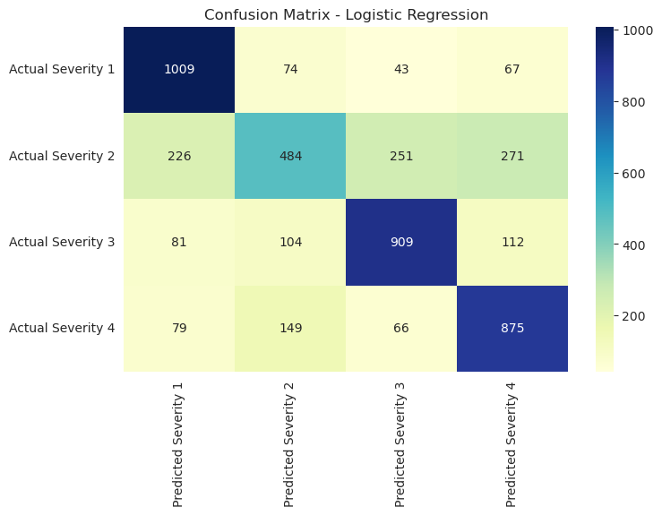
Metrics Scores and Metric Visualizations for Logistic Regression with best params
# Observing the classification report for Logistic Regression
y_pred = lr.predict(X_val_sample)
# Store the respective scores
accuracy["Logistic Regression"] = accuracy_score(y_val_sample,y_pred)
f1["Logistic Regression"] = f1_score(y_val_sample,y_pred,average = 'macro')
# Classification report on train and Val data
print(classification_report(y_train_sample,lr.predict(X_train_sample)))
print(classification_report(y_val_sample,y_pred)) precision recall f1-score support
1 0.75 0.86 0.80 4822
2 0.61 0.39 0.47 4734
3 0.72 0.79 0.75 4865
4 0.67 0.75 0.71 4779
accuracy 0.70 19200
macro avg 0.69 0.70 0.68 19200
weighted avg 0.69 0.70 0.68 19200
precision recall f1-score support
1 0.72 0.85 0.78 1193
2 0.60 0.39 0.47 1232
3 0.72 0.75 0.73 1206
4 0.66 0.75 0.70 1169
accuracy 0.68 4800
macro avg 0.67 0.69 0.67 4800
weighted avg 0.67 0.68 0.67 4800
Logistic Regression Precision vs Recall Curve on Validation set
# Creates a 2d array from 1d array of y_val_sample, where each instance represents presence of one severity via 1 and rest are 0's.
# This is necessary since predictions are in 2d format
# Creating a pr curve tests these arrays i.e. true_y_values and predictions on different
# thresholds, so binarizing is helpful to make y_val and preds of same size to be compared
Y = label_binarize(y_val_sample, classes=[1, 2, 3, 4])
y_score = lr.predict_proba(X_val_sample)
#Storing the metrics for later viz's
precision["Logistic Regression"], recall["Logistic Regression"], thresholds = precision_recall_curve(Y.ravel(), y_score.ravel())
fpr["Logistic Regression"], tpr["Logistic Regression"], _ = roc_curve(Y.ravel(), y_score.ravel())
# Plotting the PR Curve
plt.figure(figsize=(18, 10))
plt.step(recall["Logistic Regression"], precision["Logistic Regression"], where="post")
plt.xlabel("Recall")
plt.ylabel("Precision")
plt.xlim([0, 1])
plt.ylim([0, 1.01])
plt.title("PR Curve - Logisitc Regression")
plt.show()
# The curve is better the one which is near to right hand corner [1,1]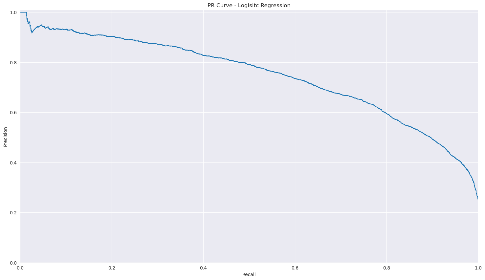
Logistic Regression ROC Curve on Validation set
plt.figure(figsize=(18, 10))
plt.step(fpr["Logistic Regression"], tpr["Logistic Regression"], where="post")
plt.title("ROC curve - Logistic Regression")
plt.xlabel("False Positive Rate")
plt.ylabel("True Positive Rate")
plt.xlim([0, 1])
plt.ylim([0, 1.01])
plt.show()
# The curve is better the one which is near to left hand corner [0,1]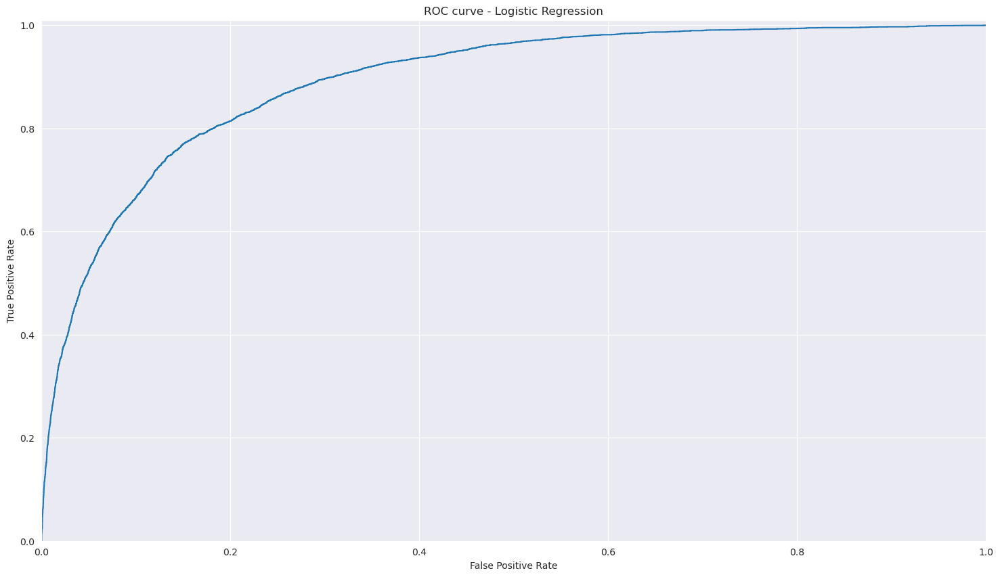
# thresholds.shape, y_score.ravel().shape # We have this difference because thresholds are chosen as many different probability instances we havex
# print(Y.shape,Y.ravel().shape,y_score.shape,y_score.ravel().shape)
# y = np.array([[1,2,3,4],[4,3,2,1],[1,2,3,4]])
# unique,counts = np.unique(y,return_counts=True)
# print(unique)
# unique,counts = np.unique(y_score,return_counts = True)
# print(len(unique)) # So we only have these many instances, which have unique prediction probabilitiesDecision Tree Model
Decision Tree Grid Search CV(5-folds) Run to find best params
dtc = DecisionTreeClassifier(random_state=42)
parameters = [{"criterion": ["gini", "entropy"], "max_depth": [5, 10, 15, 30]}]
grid = GridSearchCV(dtc, parameters, verbose = 0, n_jobs=-1)
grid.fit(X_train_sample, y_train_sample)
print("Best param scores for Decision Tree Classifier:")
print(grid.best_params_)
best_params["dtc"] = grid.best_params_
print("Train score:", grid.score(X_train_sample, y_train_sample))
print("Validation score:", grid.score(X_val_sample, y_val_sample))Best param scores for Decision Tree Classifier:
{'criterion': 'entropy', 'max_depth': 10}
Train score: 0.823125
Validation score: 0.7672916666666667pd.DataFrame(grid.cv_results_).sort_values(by = 'rank_test_score')| mean_fit_time | std_fit_time | mean_score_time | std_score_time | param_criterion | param_max_depth | params | split0_test_score | split1_test_score | split2_test_score | split3_test_score | split4_test_score | mean_test_score | std_test_score | rank_test_score | |
|---|---|---|---|---|---|---|---|---|---|---|---|---|---|---|---|
| 5 | 0.255957 | 0.014855 | 0.005243 | 0.000257 | entropy | 10 | {'criterion': 'entropy', 'max_depth': 10} | 0.752865 | 0.757812 | 0.752604 | 0.768750 | 0.759375 | 0.758281 | 0.005875 | 1 |
| 1 | 0.194180 | 0.013044 | 0.005411 | 0.000337 | gini | 10 | {'criterion': 'gini', 'max_depth': 10} | 0.749479 | 0.763802 | 0.748958 | 0.763281 | 0.763281 | 0.757760 | 0.006979 | 2 |
| 4 | 0.140707 | 0.008412 | 0.004997 | 0.000269 | entropy | 5 | {'criterion': 'entropy', 'max_depth': 5} | 0.739062 | 0.742969 | 0.744792 | 0.741406 | 0.742969 | 0.742240 | 0.001916 | 3 |
| 0 | 0.104274 | 0.002262 | 0.005177 | 0.000280 | gini | 5 | {'criterion': 'gini', 'max_depth': 5} | 0.738802 | 0.744792 | 0.728125 | 0.746094 | 0.747917 | 0.741146 | 0.007192 | 4 |
| 2 | 0.266166 | 0.012563 | 0.005544 | 0.000080 | gini | 15 | {'criterion': 'gini', 'max_depth': 15} | 0.736979 | 0.741927 | 0.727604 | 0.734115 | 0.736979 | 0.735521 | 0.004689 | 5 |
| 6 | 0.328951 | 0.009996 | 0.005584 | 0.000248 | entropy | 15 | {'criterion': 'entropy', 'max_depth': 15} | 0.727604 | 0.743490 | 0.724740 | 0.735417 | 0.733854 | 0.733021 | 0.006541 | 6 |
| 7 | 0.348827 | 0.017845 | 0.005383 | 0.000513 | entropy | 30 | {'criterion': 'entropy', 'max_depth': 30} | 0.710938 | 0.717448 | 0.710938 | 0.713281 | 0.710938 | 0.712708 | 0.002538 | 7 |
| 3 | 0.334237 | 0.034283 | 0.007774 | 0.003789 | gini | 30 | {'criterion': 'gini', 'max_depth': 30} | 0.712760 | 0.711979 | 0.706771 | 0.709375 | 0.711719 | 0.710521 | 0.002189 | 8 |
Running the best params Decision Tree model
print("Best Param scores for Decision Tree Classifier:")
dtc = DecisionTreeClassifier(**grid.best_params_, random_state = 42)
dtc.fit(X_train_sample, y_train_sample)
# Storing the model trained with best params later used for visualizations
models["Decision Tree"] = dtc
print("Train score:", dtc.score(X_train_sample, y_train_sample))
print("Validation score:", dtc.score(X_val_sample, y_val_sample))Best Param scores for Decision Tree Classifier:
Train score: 0.823125
Validation score: 0.7672916666666667Decision Tree Conf. Matrix on Validation set
y_pred = dtc.predict(X_val_sample)
confmat = confusion_matrix(y_true=y_val_sample, y_pred=y_pred)
index = ["Actual Severity 1", "Actual Severity 2", "Actual Severity 3", "Actual Severity 4"]
columns = ["Predicted Severity 1", "Predicted Severity 2", "Predicted Severity 3", "Predicted Severity 4"]
conf_matrix = pd.DataFrame(data=confmat, columns=columns, index=index)
plt.figure(figsize=(8, 5))
sns.heatmap(conf_matrix, annot=True, fmt="d", cmap="YlGnBu")
plt.title("Confusion Matrix - Decision Tree")
plt.show()
Metrics Scores and Metric Visualizations for Decision Tree with best params
y_pred = dtc.predict(X_val_sample)
accuracy["Decision Tree"] = accuracy_score(y_val_sample, y_pred)
f1["Decision Tree"] = f1_score(y_val_sample, y_pred, average="macro")
print(classification_report(y_train_sample, dtc.predict(X_train_sample)))
print(classification_report(y_val_sample, y_pred)) precision recall f1-score support
1 0.91 0.96 0.94 4822
2 0.80 0.65 0.72 4734
3 0.80 0.83 0.81 4865
4 0.77 0.85 0.81 4779
accuracy 0.82 19200
macro avg 0.82 0.82 0.82 19200
weighted avg 0.82 0.82 0.82 19200
precision recall f1-score support
1 0.89 0.94 0.91 1193
2 0.72 0.59 0.65 1232
3 0.75 0.75 0.75 1206
4 0.70 0.79 0.75 1169
accuracy 0.77 4800
macro avg 0.77 0.77 0.76 4800
weighted avg 0.77 0.77 0.76 4800
Decision Tree Precision vs Recall Curve on Validation set
Y = label_binarize(y_val_sample, classes=[1, 2, 3, 4])
y_score = dtc.predict_proba(X_val_sample)
precision["Decision Tree"], recall["Decision Tree"], _ = precision_recall_curve(Y.ravel(), y_score.ravel())
fpr["Decision Tree"], tpr["Decision Tree"], _ = roc_curve(Y.ravel(), y_score.ravel())
plt.figure(figsize=(18, 10))
plt.step(recall["Decision Tree"], precision["Decision Tree"], where="post")
plt.xlabel("Recall")
plt.ylabel("Precision")
plt.xlim([0, 1])
plt.ylim([0, 1.01])
plt.title("PR Curve - Decision Tree")
plt.show()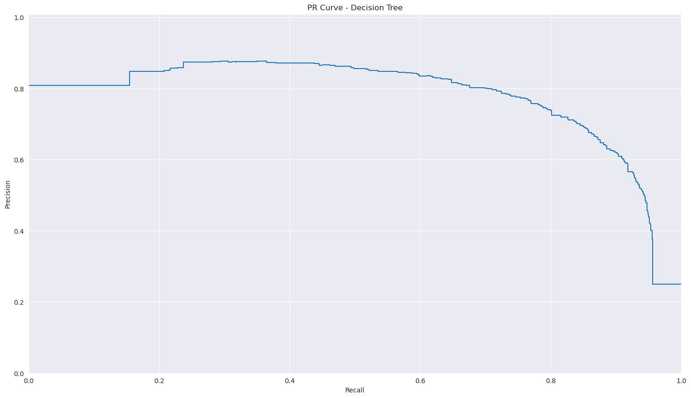
Decision Tree ROC Curve on Validation set
plt.figure(figsize=(18, 10))
plt.step(fpr["Decision Tree"], tpr["Decision Tree"], where="post")
plt.title("ROC curve - Decision Tree")
plt.xlabel("False Positive Rate")
plt.ylabel("True Positive Rate")
plt.xlim([0, 1])
plt.ylim([0, 1.01])
plt.show()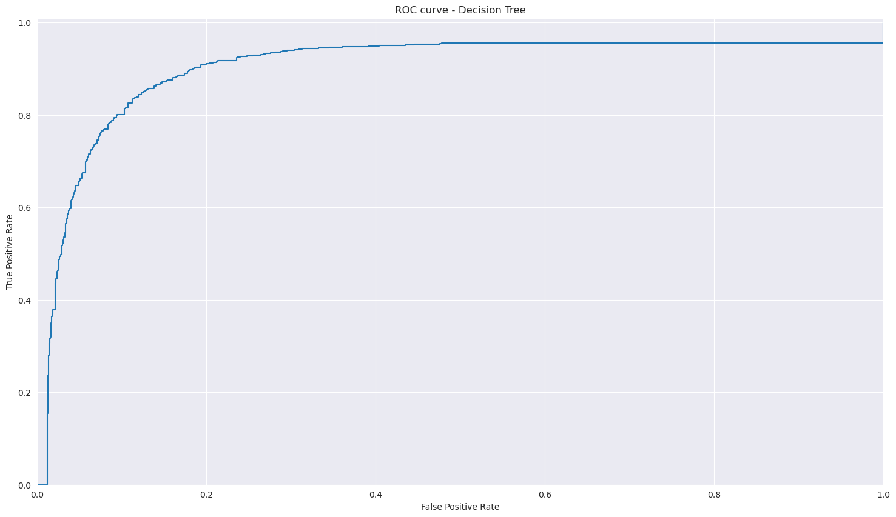
importances = pd.DataFrame(np.zeros((X_train_sample.shape[1], 1)), columns=["importance"], index=X_train_sample.columns)
importances.iloc[:,0] = dtc.feature_importances_
importances = importances.sort_values(by="importance", ascending=False)[:30]
plt.figure(figsize=(15, 10))
sns.barplot(x="importance", y=importances.index, data=importances)
plt.show()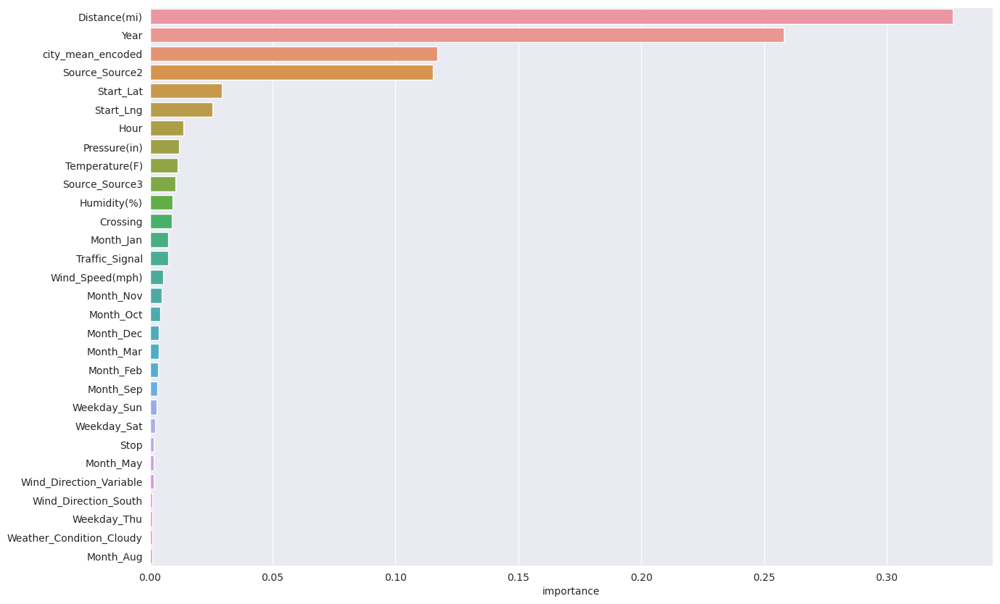
fig, ax = plt.subplots(figsize=(30, 15))
plot_tree(dtc, max_depth=4, fontsize=10, feature_names=X_train_sample.columns.to_list(), class_names = True, filled=True)
plt.show()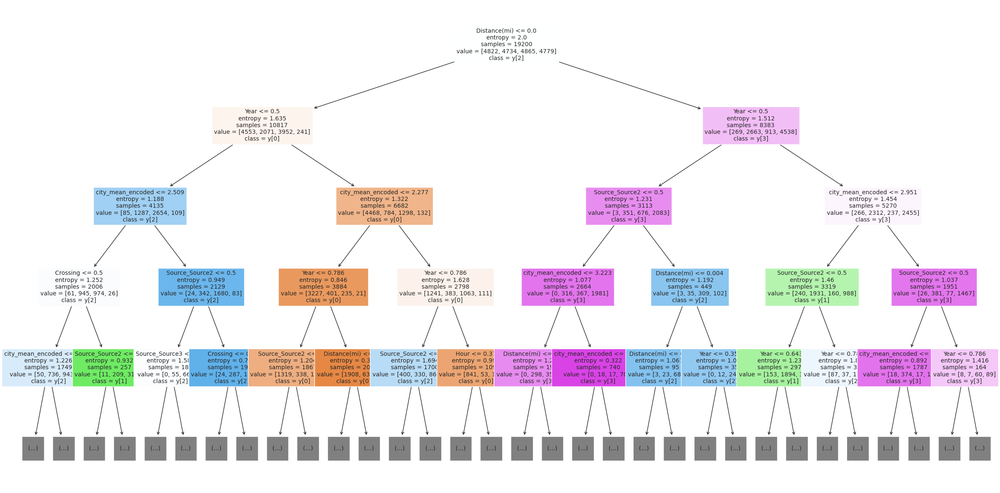
Random Forest Classifier
Random Forest Classifier Grid Search CV (5 - folds) Run to find best params
rfc = RandomForestClassifier(n_jobs=-1, random_state=42)
parameters = [{"n_estimators": [50, 100, 200, 500], "max_depth": [5, 10, 15, 30]}]
grid = GridSearchCV(rfc, parameters, verbose = 0, n_jobs=-1)
grid.fit(X_train_sample, y_train_sample)
print("Best parameters scores:")
print(grid.best_params_)
best_params["rfc"] = grid.best_params_
print("Train score:", grid.score(X_train_sample, y_train_sample))
print("Validation score:", grid.score(X_val_sample, y_val_sample))/opt/conda/lib/python3.10/site-packages/joblib/externals/loky/process_executor.py:700: UserWarning: A worker stopped while some jobs were given to the executor. This can be caused by a too short worker timeout or by a memory leak.
warnings.warn(Best parameters scores:
{'max_depth': 30, 'n_estimators': 500}
Train score: 0.9999479166666667
Validation score: 0.788125pd.DataFrame(grid.cv_results_).sort_values(by="rank_test_score")| mean_fit_time | std_fit_time | mean_score_time | std_score_time | param_max_depth | param_n_estimators | params | split0_test_score | split1_test_score | split2_test_score | split3_test_score | split4_test_score | mean_test_score | std_test_score | rank_test_score | |
|---|---|---|---|---|---|---|---|---|---|---|---|---|---|---|---|
| 15 | 18.515080 | 2.652032 | 0.737646 | 0.164817 | 30 | 500 | {'max_depth': 30, 'n_estimators': 500} | 0.790365 | 0.788021 | 0.785417 | 0.792448 | 0.790365 | 0.789323 | 0.002404 | 1 |
| 13 | 3.962996 | 0.360099 | 0.180050 | 0.025820 | 30 | 100 | {'max_depth': 30, 'n_estimators': 100} | 0.786979 | 0.786458 | 0.782292 | 0.790104 | 0.789062 | 0.786979 | 0.002696 | 2 |
| 14 | 7.875134 | 0.286106 | 0.332275 | 0.026725 | 30 | 200 | {'max_depth': 30, 'n_estimators': 200} | 0.785937 | 0.786979 | 0.783854 | 0.788021 | 0.788542 | 0.786667 | 0.001667 | 3 |
| 11 | 16.402865 | 0.826905 | 0.633739 | 0.024163 | 15 | 500 | {'max_depth': 15, 'n_estimators': 500} | 0.783594 | 0.784635 | 0.779948 | 0.784896 | 0.783594 | 0.783333 | 0.001774 | 4 |
| 12 | 1.989083 | 0.078801 | 0.100145 | 0.012897 | 30 | 50 | {'max_depth': 30, 'n_estimators': 50} | 0.779427 | 0.782552 | 0.777083 | 0.788802 | 0.785677 | 0.782708 | 0.004204 | 5 |
| 10 | 7.016634 | 0.366032 | 0.271259 | 0.017576 | 15 | 200 | {'max_depth': 15, 'n_estimators': 200} | 0.782292 | 0.783333 | 0.777865 | 0.784115 | 0.783073 | 0.782135 | 0.002213 | 6 |
| 9 | 3.129164 | 0.103627 | 0.140270 | 0.007632 | 15 | 100 | {'max_depth': 15, 'n_estimators': 100} | 0.783333 | 0.780990 | 0.777344 | 0.784115 | 0.780729 | 0.781302 | 0.002372 | 7 |
| 8 | 1.563844 | 0.036690 | 0.075092 | 0.009221 | 15 | 50 | {'max_depth': 15, 'n_estimators': 50} | 0.780729 | 0.783594 | 0.775521 | 0.782813 | 0.778385 | 0.780208 | 0.002960 | 8 |
| 5 | 2.597278 | 0.374912 | 0.108515 | 0.014335 | 10 | 100 | {'max_depth': 10, 'n_estimators': 100} | 0.763802 | 0.766667 | 0.759115 | 0.770573 | 0.762500 | 0.764531 | 0.003875 | 9 |
| 4 | 1.120571 | 0.027130 | 0.056506 | 0.004969 | 10 | 50 | {'max_depth': 10, 'n_estimators': 50} | 0.762500 | 0.765885 | 0.755990 | 0.777604 | 0.760417 | 0.764479 | 0.007304 | 10 |
| 7 | 11.801545 | 0.430042 | 0.521564 | 0.112087 | 10 | 500 | {'max_depth': 10, 'n_estimators': 500} | 0.763281 | 0.769271 | 0.758594 | 0.764062 | 0.764583 | 0.763958 | 0.003402 | 11 |
| 6 | 4.509795 | 0.102956 | 0.187681 | 0.009292 | 10 | 200 | {'max_depth': 10, 'n_estimators': 200} | 0.762500 | 0.767708 | 0.758854 | 0.764583 | 0.764583 | 0.763646 | 0.002917 | 12 |
| 0 | 0.677395 | 0.020604 | 0.046187 | 0.006181 | 5 | 50 | {'max_depth': 5, 'n_estimators': 50} | 0.734115 | 0.738542 | 0.724740 | 0.734635 | 0.737240 | 0.733854 | 0.004841 | 13 |
| 1 | 1.642113 | 0.265302 | 0.084260 | 0.015849 | 5 | 100 | {'max_depth': 5, 'n_estimators': 100} | 0.737240 | 0.738281 | 0.723177 | 0.733333 | 0.736458 | 0.733698 | 0.005513 | 14 |
| 2 | 2.776722 | 0.182507 | 0.145607 | 0.010656 | 5 | 200 | {'max_depth': 5, 'n_estimators': 200} | 0.734115 | 0.738542 | 0.727604 | 0.730469 | 0.734375 | 0.733021 | 0.003725 | 15 |
| 3 | 6.944975 | 0.057636 | 0.334258 | 0.010734 | 5 | 500 | {'max_depth': 5, 'n_estimators': 500} | 0.729167 | 0.734896 | 0.727083 | 0.729948 | 0.733854 | 0.730990 | 0.002937 | 16 |
Running the best params Random Forest Classifier Model
print("Best Param scores for Random Forest Classifier:")
rfc = RandomForestClassifier(**grid.best_params_, random_state = 42)
rfc.fit(X_train_sample, y_train_sample)
# Storing the model trained with best params later used for visualizations
models["Random Forest"] = rfc
print("Train Score: ", rfc.score(X_train_sample, y_train_sample))
print("Validation Score: ", rfc.score(X_val_sample, y_val_sample))Best Param scores for Random Forest Classifier:
Train Score: 0.9999479166666667
Validation Score: 0.788125Random Forest Classifier Conf. Matrix on Validation Set
y_pred = rfc.predict(X_val_sample)
confmat = confusion_matrix(y_true=y_val_sample, y_pred=y_pred)
index = ["Actual Severity 1", "Actual Severity 2", "Actual Severity 3", "Actual Severity 4"]
columns = ["Predicted Severity 1", "Predicted Severity 2", "Predicted Severity 3", "Predicted Severity 4"]
conf_matrix = pd.DataFrame(data=confmat, columns=columns, index=index)
plt.figure(figsize=(8, 5))
sns.heatmap(conf_matrix, annot=True, fmt="d", cmap="YlGnBu")
plt.title("Confusion Matrix - Random Forest")
plt.show()Metrics Scores and Metric Visualizations for Random Forest Classifier with best params
y_pred = rfc.predict(X_val_sample)
accuracy["Random Forest"] = accuracy_score(y_val_sample, y_pred)
f1["Random Forest"] = f1_score(y_val_sample, y_pred, average="macro")
print(classification_report(y_train_sample, rfc.predict(X_train_sample)))
print(classification_report(y_val_sample, y_pred)) precision recall f1-score support
1 1.00 1.00 1.00 4822
2 1.00 1.00 1.00 4734
3 1.00 1.00 1.00 4865
4 1.00 1.00 1.00 4779
accuracy 1.00 19200
macro avg 1.00 1.00 1.00 19200
weighted avg 1.00 1.00 1.00 19200
precision recall f1-score support
1 0.91 0.95 0.93 1193
2 0.76 0.61 0.68 1232
3 0.77 0.76 0.76 1206
4 0.72 0.83 0.77 1169
accuracy 0.79 4800
macro avg 0.79 0.79 0.79 4800
weighted avg 0.79 0.79 0.78 4800
Random Forest Classifier Precision vs Recall Curve on Validation Set
Y = label_binarize(y_val_sample, classes=[1, 2, 3, 4])
y_score = rfc.predict_proba(X_val_sample)
precision["Random Forest"], recall["Random Forest"], _ = precision_recall_curve(Y.ravel(), y_score.ravel())
fpr["Random Forest"], tpr["Random Forest"], _ = roc_curve(Y.ravel(), y_score.ravel())
plt.figure(figsize=(18, 10))
plt.step(recall["Random Forest"], precision["Random Forest"], where="post")
plt.xlabel("Recall")
plt.ylabel("Precision")
plt.xlim([0, 1])
plt.ylim([0, 1.01])
plt.title("PR Curve - Random Forest")
plt.show()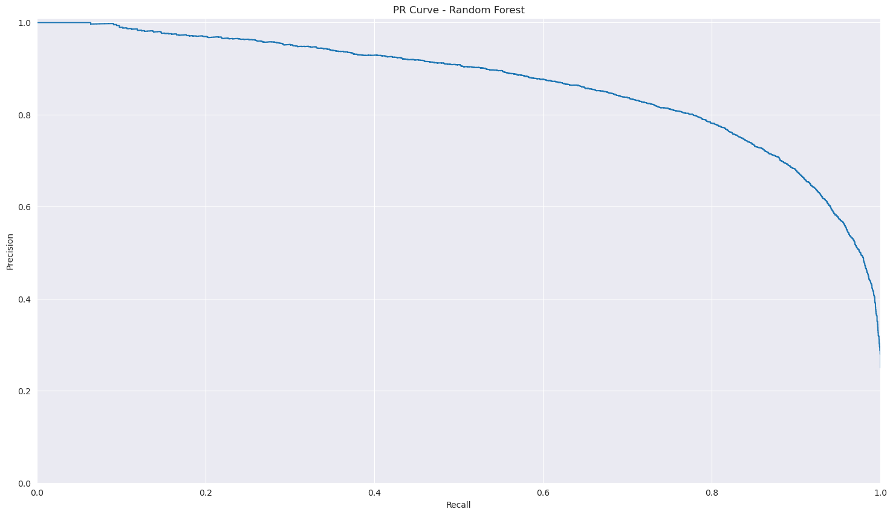
Random Forest Classifier ROC Curve on Validation Set
plt.figure(figsize=(18, 10))
plt.step(fpr["Random Forest"], tpr["Random Forest"], where="post")
plt.title("ROC curve - Random Forest")
plt.xlabel("False Positive Rate")
plt.ylabel("True Positive Rate")
plt.xlim([0, 1])
plt.ylim([0, 1.01])
plt.show()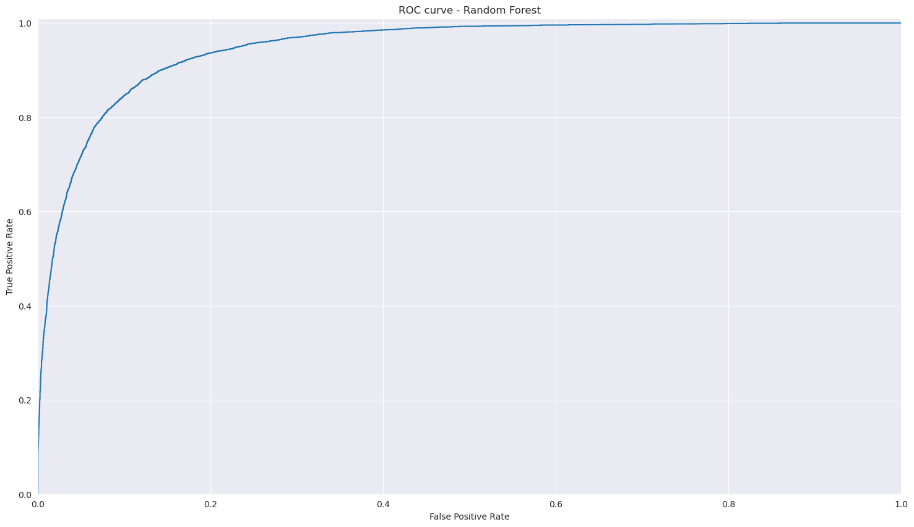
importances = pd.DataFrame(np.zeros((X_train_sample.shape[1], 1)), columns=["importance"], index=X_train_sample.columns)
importances.iloc[:,0] = rfc.feature_importances_
importances = importances.sort_values(by="importance", ascending=False)[:30]
plt.figure(figsize=(15, 10))
sns.barplot(x="importance", y=importances.index, data=importances)
plt.show()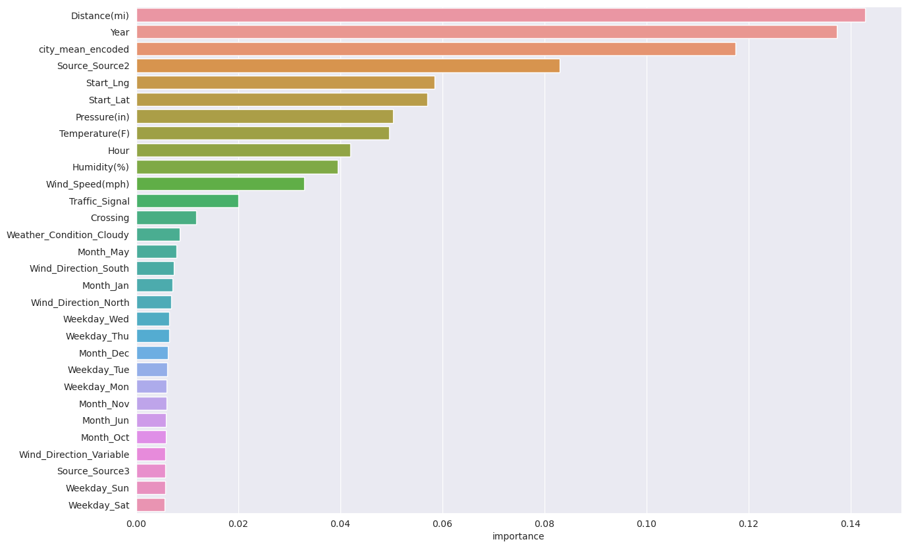
Naive Bayes
Running algo without Grid-Search CV
- There are not major hyper params to be tweaked for this algo.
gnb = GaussianNB()
gnb.fit(X_train_sample, y_train_sample)
# Storing the model trained with best params later used for visualizations
models["Gaussian Naive Bayes"] = gnb
print("Train score:", gnb.score(X_train_sample, y_train_sample))
print("Validation score:", gnb.score(X_val_sample, y_val_sample))Train score: 0.4340104166666667
Validation score: 0.42645833333333333Gaussian Naive Bayes Conf. Matrix on Validation set
y_pred = gnb.predict(X_val_sample)
confmat = confusion_matrix(y_true=y_val_sample, y_pred=y_pred)
index = ["Actual Severity 1", "Actual Severity 2", "Actual Severity 3", "Actual Severity 4"]
columns = ["Predicted Severity 1", "Predicted Severity 2", "Predicted Severity 3", "Predicted Severity 4"]
conf_matrix = pd.DataFrame(data=confmat, columns=columns, index=index)
plt.figure(figsize=(8, 5))
sns.heatmap(conf_matrix, annot=True, fmt="d", cmap="YlGnBu")
plt.title("Confusion Matrix - Gaussian Naive Bayes")
plt.show()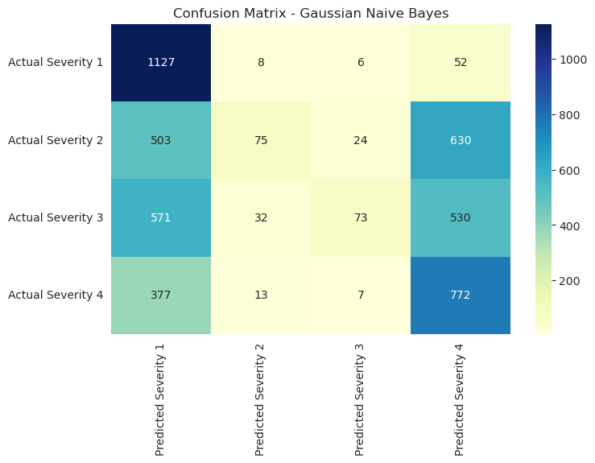
Metrics Scores and Metric Visualizations for Gaussian Naive Bayes with best params
y_pred = gnb.predict(X_val_sample)
accuracy["Gaussian Naive Bayes"] = accuracy_score(y_val_sample, y_pred)
f1["Gaussian Naive Bayes"] = f1_score(y_val_sample, y_pred, average="macro")
print(classification_report(y_train_sample, gnb.predict(X_train_sample)))
print(classification_report(y_val_sample, y_pred)) precision recall f1-score support
1 0.45 0.94 0.61 4822
2 0.61 0.06 0.11 4734
3 0.63 0.06 0.10 4865
4 0.40 0.67 0.50 4779
accuracy 0.43 19200
macro avg 0.52 0.43 0.33 19200
weighted avg 0.52 0.43 0.33 19200
precision recall f1-score support
1 0.44 0.94 0.60 1193
2 0.59 0.06 0.11 1232
3 0.66 0.06 0.11 1206
4 0.39 0.66 0.49 1169
accuracy 0.43 4800
macro avg 0.52 0.43 0.33 4800
weighted avg 0.52 0.43 0.32 4800
Gaussian Naive Bayes Precision vs Recall Curve on Validation set
Y = label_binarize(y_val_sample, classes=[1, 2, 3, 4])
y_score = gnb.predict_proba(X_val_sample)
precision["Gaussian Naive Bayes"], recall["Gaussian Naive Bayes"], _ = precision_recall_curve(Y.ravel(), y_score.ravel())
fpr["Gaussian Naive Bayes"], tpr["Gaussian Naive Bayes"], _ = roc_curve(Y.ravel(), y_score.ravel())
plt.figure(figsize=(18, 10))
plt.step(recall["Gaussian Naive Bayes"], precision["Gaussian Naive Bayes"], where="post")
plt.xlabel("Recall")
plt.ylabel("Precision")
plt.xlim([0, 1])
plt.ylim([0, 1.01])
plt.title("PR Curve - Gaussian Naive Bayes")
plt.show()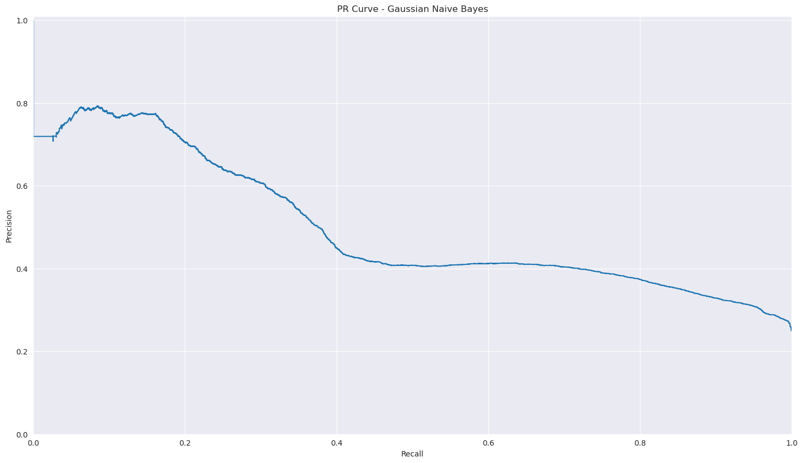
Gaussian Naive Bayes ROC Curve on Validation set
plt.figure(figsize=(18, 10))
plt.step(fpr["Gaussian Naive Bayes"], tpr["Gaussian Naive Bayes"], where="post")
plt.title("ROC curve - Gaussian Naive Bayes")
plt.xlabel("False Positive Rate")
plt.ylabel("True Positive Rate")
plt.xlim([0, 1])
plt.ylim([0, 1.01])
plt.show()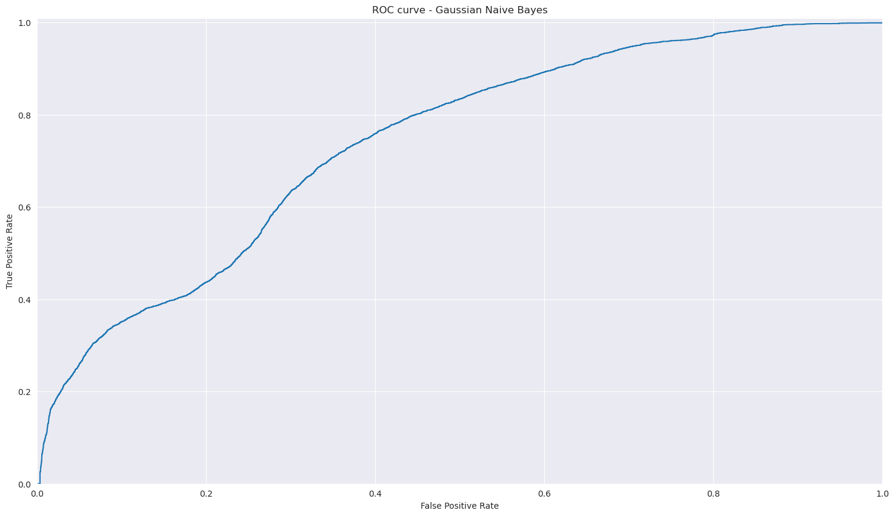
Multinomial Naive Bayes
Running algo without Grid-Search CV
- There are not major hyper params to be tweaked for this algo.
mnb = MultinomialNB()
mnb.fit(X_train_sample, y_train_sample)
# Storing the model trained with best params later used for visualizations
models["Multinomial Naive Bayes"] = mnb
print("Train score:", mnb.score(X_train_sample, y_train_sample))
print("Validation score:", mnb.score(X_val_sample, y_val_sample))Train score: 0.6055208333333333
Validation score: 0.6039583333333334Multinomial Naive Bayes Conf. Matrix on Validation set
y_pred = mnb.predict(X_val_sample)
confmat = confusion_matrix(y_true=y_val_sample, y_pred=y_pred)
index = ["Actual Severity 1", "Actual Severity 2", "Actual Severity 3", "Actual Severity 4"]
columns = ["Predicted Severity 1", "Predicted Severity 2", "Predicted Severity 3", "Predicted Severity 4"]
conf_matrix = pd.DataFrame(data=confmat, columns=columns, index=index)
plt.figure(figsize=(8, 5))
sns.heatmap(conf_matrix, annot=True, fmt="d", cmap="YlGnBu")
plt.title("Confusion Matrix - Multinomial Naive Bayes")
plt.show()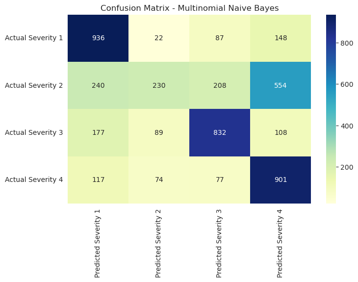
Metrics Scores and Metric Visualizations for Multinomial Naive Bayes with best params
y_pred = mnb.predict(X_val_sample)
accuracy["Multinomial Naive Bayes"] = accuracy_score(y_val_sample, y_pred)
f1["Multinomial Naive Bayes"] = f1_score(y_val_sample, y_pred, average="macro")
print(classification_report(y_train_sample, mnb.predict(X_train_sample)))
print(classification_report(y_val_sample, y_pred)) precision recall f1-score support
1 0.62 0.80 0.70 4822
2 0.55 0.18 0.28 4734
3 0.69 0.68 0.68 4865
4 0.55 0.75 0.63 4779
accuracy 0.61 19200
macro avg 0.60 0.60 0.57 19200
weighted avg 0.60 0.61 0.57 19200
precision recall f1-score support
1 0.64 0.78 0.70 1193
2 0.55 0.19 0.28 1232
3 0.69 0.69 0.69 1206
4 0.53 0.77 0.63 1169
accuracy 0.60 4800
macro avg 0.60 0.61 0.57 4800
weighted avg 0.60 0.60 0.57 4800
Multinomial Naive Bayes Precision vs Recall Curve on Validation set
Y = label_binarize(y_val_sample, classes=[1, 2, 3, 4])
y_score = mnb.predict_proba(X_val_sample)
precision["Multinomial Naive Bayes"], recall["Multinomial Naive Bayes"], _ = precision_recall_curve(Y.ravel(), y_score.ravel())
fpr["Multinomial Naive Bayes"], tpr["Multinomial Naive Bayes"], _ = roc_curve(Y.ravel(), y_score.ravel())
plt.figure(figsize=(18, 10))
plt.step(recall["Multinomial Naive Bayes"], precision["Multinomial Naive Bayes"], where="post")
plt.xlabel("Recall")
plt.ylabel("Precision")
plt.xlim([0, 1])
plt.ylim([0, 1.01])
plt.title("PR Curve - Multinomial Naive Bayes")
plt.show()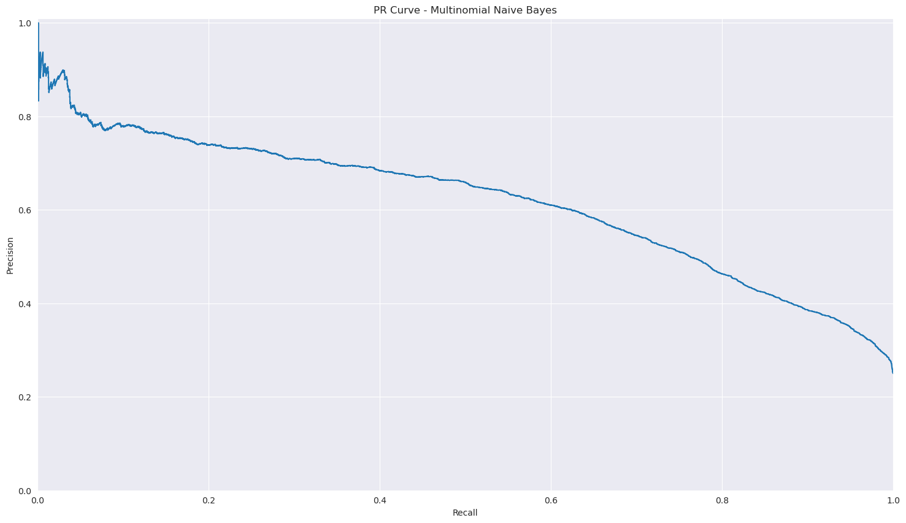
Multinomial Naive Bayes ROC Curve on Validation set
plt.figure(figsize=(18, 10))
plt.step(fpr["Multinomial Naive Bayes"], tpr["Multinomial Naive Bayes"], where="post")
plt.title("ROC curve - Multinomial Naive Bayes")
plt.xlabel("False Positive Rate")
plt.ylabel("True Positive Rate")
plt.xlim([0, 1])
plt.ylim([0, 1.01])
plt.show()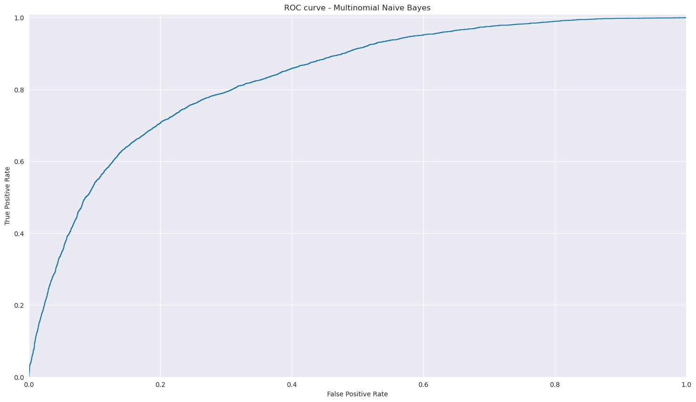
Bernoulli Naive Bayes
Running algo without Grid-Search CV
- There are not major hyper params to be tweaked for this algo.
bnb = BernoulliNB()
bnb.fit(X_train_sample, y_train_sample)
# Storing the model trained with best params later used for visualizations
models["Bernoulli Naive Bayes"] = bnb
print("Train score:", bnb.score(X_train_sample, y_train_sample))
print("Validation score:", bnb.score(X_val_sample, y_val_sample))Train score: 0.611875
Validation score: 0.6035416666666666Bernoulli Naive Bayes Conf. Matrix on Validation set
y_pred = bnb.predict(X_val_sample)
confmat = confusion_matrix(y_true=y_val_sample, y_pred=y_pred)
index = ["Actual Severity 1", "Actual Severity 2", "Actual Severity 3", "Actual Severity 4"]
columns = ["Predicted Severity 1", "Predicted Severity 2", "Predicted Severity 3", "Predicted Severity 4"]
conf_matrix = pd.DataFrame(data=confmat, columns=columns, index=index)
plt.figure(figsize=(8, 5))
sns.heatmap(conf_matrix, annot=True, fmt="d", cmap="YlGnBu")
plt.title("Confusion Matrix - Bernoulli Naive Bayes")
plt.show()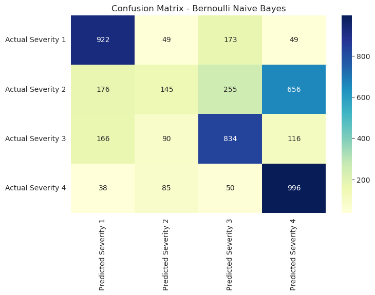
Metrics Scores and Metric Visualizations for Bernoulli Naive Bayes with best params
y_pred = bnb.predict(X_val_sample)
accuracy["Bernoulli Naive Bayes"] = accuracy_score(y_val_sample, y_pred)
f1["Bernoulli Naive Bayes"] = f1_score(y_val_sample, y_pred, average="macro")
print(classification_report(y_train_sample, bnb.predict(X_train_sample)))
print(classification_report(y_val_sample, y_pred)) precision recall f1-score support
1 0.71 0.77 0.74 4822
2 0.40 0.12 0.19 4734
3 0.63 0.70 0.66 4865
4 0.57 0.85 0.68 4779
accuracy 0.61 19200
macro avg 0.58 0.61 0.57 19200
weighted avg 0.58 0.61 0.57 19200
precision recall f1-score support
1 0.71 0.77 0.74 1193
2 0.39 0.12 0.18 1232
3 0.64 0.69 0.66 1206
4 0.55 0.85 0.67 1169
accuracy 0.60 4800
macro avg 0.57 0.61 0.56 4800
weighted avg 0.57 0.60 0.56 4800
Bernoulli Naive Bayes Precision vs Recall Curve on Validation set
Y = label_binarize(y_val_sample, classes=[1, 2, 3, 4])
y_score = bnb.predict_proba(X_val_sample)
precision["Bernoulli Naive Bayes"], recall["Bernoulli Naive Bayes"], _ = precision_recall_curve(Y.ravel(), y_score.ravel())
fpr["Bernoulli Naive Bayes"], tpr["Bernoulli Naive Bayes"], _ = roc_curve(Y.ravel(), y_score.ravel())
plt.figure(figsize=(18, 10))
plt.step(recall["Bernoulli Naive Bayes"], precision["Bernoulli Naive Bayes"], where="post")
plt.xlabel("Recall")
plt.ylabel("Precision")
plt.xlim([0, 1])
plt.ylim([0, 1.01])
plt.title("PR Curve - Bernoulli Naive Bayes")
plt.show()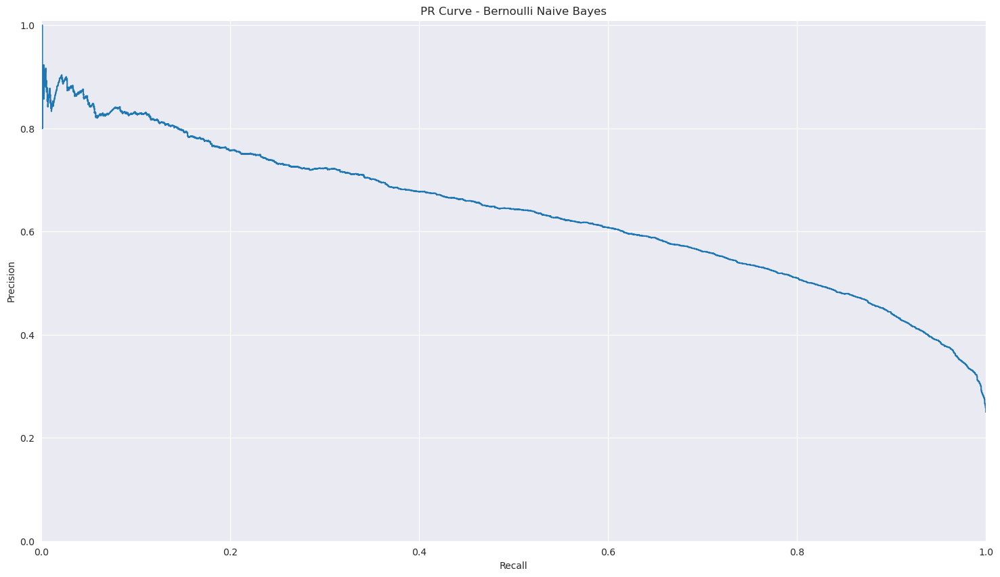
Bernoulli Naive Bayes ROC Curve on Validation set
plt.figure(figsize=(18, 10))
plt.step(fpr["Bernoulli Naive Bayes"], tpr["Bernoulli Naive Bayes"], where="post")
plt.title("ROC curve - Bernoulli Naive Bayes")
plt.xlabel("False Positive Rate")
plt.ylabel("True Positive Rate")
plt.xlim([0, 1])
plt.ylim([0, 1.01])
plt.show()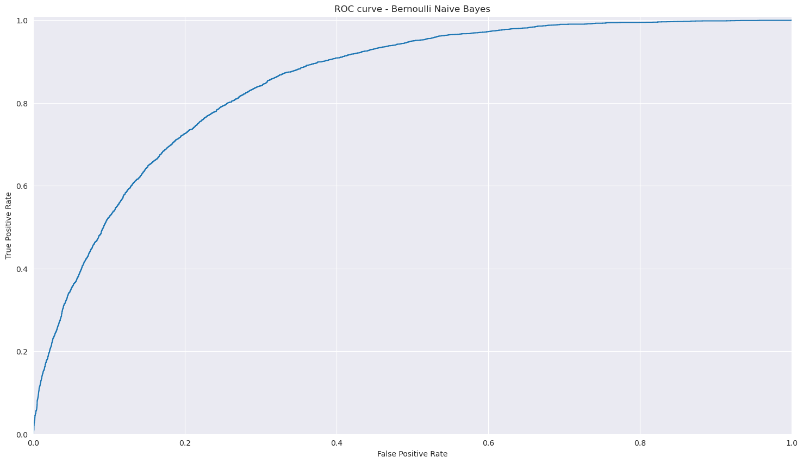
XGBoost Classifier
- This algo requires the target labels to start from 0 so we transform the target | Original Label | Encoded Label | | ————– | ————- | | 1 | 0 | | 2 | 1 | | 3 | 2 | | 4 | 3 |
from sklearn.preprocessing import LabelEncoder
# Create an instance of LabelEncoder
label_encoder = LabelEncoder()
# Fit and transform the target variable
y_train_encoded = label_encoder.fit_transform(y_train_sample)
y_val_encoded = label_encoder.transform(y_val_sample)
parameters = [
{'learning_rate': [0.1, 0.01, 0.05],
'subsample': [0.6,0.8,0.9],
'n_estimators': [16,64,128]}
]
xgb = XGBClassifier(tree_method = 'gpu_hist',random_state=42)
grid = GridSearchCV(xgb, parameters, verbose=0, n_jobs=-1)
grid.fit(X_train_sample, y_train_encoded)
print("Best parameters scores:")
print(grid.best_params_)
best_params["xgb"] = grid.best_params_
print("Train score: ", grid.score(X_train_sample, y_train_encoded))/opt/conda/lib/python3.10/site-packages/joblib/externals/loky/process_executor.py:700: UserWarning: A worker stopped while some jobs were given to the executor. This can be caused by a too short worker timeout or by a memory leak.
warnings.warn(Best parameters scores:
{'learning_rate': 0.1, 'n_estimators': 128, 'subsample': 0.9}
Train score: 0.8716145833333333pd.DataFrame(grid.cv_results_).sort_values(by="rank_test_score")| mean_fit_time | std_fit_time | mean_score_time | std_score_time | param_learning_rate | param_n_estimators | param_subsample | params | split0_test_score | split1_test_score | split2_test_score | split3_test_score | split4_test_score | mean_test_score | std_test_score | rank_test_score | |
|---|---|---|---|---|---|---|---|---|---|---|---|---|---|---|---|---|
| 8 | 3.067073 | 0.128407 | 0.077126 | 0.001278 | 0.1 | 128 | 0.9 | {'learning_rate': 0.1, 'n_estimators': 128, 's... | 0.800521 | 0.792708 | 0.786979 | 0.801823 | 0.793750 | 0.795156 | 0.005442 | 1 |
| 7 | 3.132010 | 0.157575 | 0.077569 | 0.000420 | 0.1 | 128 | 0.8 | {'learning_rate': 0.1, 'n_estimators': 128, 's... | 0.800521 | 0.792969 | 0.788542 | 0.797917 | 0.790885 | 0.794167 | 0.004434 | 2 |
| 6 | 3.214932 | 0.094857 | 0.077695 | 0.001827 | 0.1 | 128 | 0.6 | {'learning_rate': 0.1, 'n_estimators': 128, 's... | 0.796875 | 0.791146 | 0.788802 | 0.794792 | 0.794010 | 0.793125 | 0.002837 | 3 |
| 25 | 3.262971 | 0.023262 | 0.081692 | 0.006806 | 0.05 | 128 | 0.8 | {'learning_rate': 0.05, 'n_estimators': 128, '... | 0.796615 | 0.789844 | 0.781510 | 0.796875 | 0.788542 | 0.790677 | 0.005709 | 4 |
| 24 | 3.273804 | 0.056599 | 0.078601 | 0.002916 | 0.05 | 128 | 0.6 | {'learning_rate': 0.05, 'n_estimators': 128, '... | 0.794531 | 0.791146 | 0.779167 | 0.797396 | 0.789583 | 0.790365 | 0.006220 | 5 |
| 26 | 2.902239 | 0.472337 | 0.090681 | 0.035054 | 0.05 | 128 | 0.9 | {'learning_rate': 0.05, 'n_estimators': 128, '... | 0.793750 | 0.788021 | 0.780729 | 0.796094 | 0.789062 | 0.789531 | 0.005307 | 6 |
| 5 | 1.885446 | 0.033292 | 0.046460 | 0.002780 | 0.1 | 64 | 0.9 | {'learning_rate': 0.1, 'n_estimators': 64, 'su... | 0.792969 | 0.788802 | 0.779687 | 0.794010 | 0.789583 | 0.789010 | 0.005059 | 7 |
| 4 | 1.903320 | 0.040210 | 0.046029 | 0.002750 | 0.1 | 64 | 0.8 | {'learning_rate': 0.1, 'n_estimators': 64, 'su... | 0.791146 | 0.789323 | 0.779687 | 0.794531 | 0.786979 | 0.788333 | 0.004978 | 8 |
| 3 | 1.908362 | 0.046139 | 0.048469 | 0.002625 | 0.1 | 64 | 0.6 | {'learning_rate': 0.1, 'n_estimators': 64, 'su... | 0.790365 | 0.787760 | 0.782031 | 0.790625 | 0.788021 | 0.787760 | 0.003094 | 9 |
| 23 | 1.799945 | 0.035620 | 0.043470 | 0.001835 | 0.05 | 64 | 0.9 | {'learning_rate': 0.05, 'n_estimators': 64, 's... | 0.785677 | 0.781510 | 0.778385 | 0.792188 | 0.780208 | 0.783594 | 0.004922 | 10 |
| 21 | 1.614771 | 0.134312 | 0.058990 | 0.018729 | 0.05 | 64 | 0.6 | {'learning_rate': 0.05, 'n_estimators': 64, 's... | 0.782813 | 0.780990 | 0.777865 | 0.791667 | 0.782552 | 0.783177 | 0.004596 | 11 |
| 22 | 1.707692 | 0.017075 | 0.042289 | 0.001484 | 0.05 | 64 | 0.8 | {'learning_rate': 0.05, 'n_estimators': 64, 's... | 0.781250 | 0.782031 | 0.777344 | 0.793229 | 0.781510 | 0.783073 | 0.005345 | 12 |
| 2 | 0.572961 | 0.046966 | 0.019913 | 0.003506 | 0.1 | 16 | 0.9 | {'learning_rate': 0.1, 'n_estimators': 16, 'su... | 0.776823 | 0.772396 | 0.765625 | 0.784635 | 0.777083 | 0.775313 | 0.006240 | 13 |
| 1 | 0.624717 | 0.047690 | 0.025584 | 0.009838 | 0.1 | 16 | 0.8 | {'learning_rate': 0.1, 'n_estimators': 16, 'su... | 0.773698 | 0.771354 | 0.769531 | 0.783333 | 0.776823 | 0.774948 | 0.004851 | 14 |
| 0 | 1.088350 | 0.267042 | 0.020474 | 0.001141 | 0.1 | 16 | 0.6 | {'learning_rate': 0.1, 'n_estimators': 16, 'su... | 0.773958 | 0.771354 | 0.769792 | 0.782031 | 0.775260 | 0.774479 | 0.004234 | 15 |
| 15 | 3.299162 | 0.051481 | 0.086740 | 0.006313 | 0.01 | 128 | 0.6 | {'learning_rate': 0.01, 'n_estimators': 128, '... | 0.776042 | 0.770052 | 0.766927 | 0.783073 | 0.774219 | 0.774062 | 0.005516 | 16 |
| 16 | 3.348214 | 0.025955 | 0.079925 | 0.002310 | 0.01 | 128 | 0.8 | {'learning_rate': 0.01, 'n_estimators': 128, '... | 0.773958 | 0.770312 | 0.767448 | 0.781250 | 0.775521 | 0.773698 | 0.004711 | 17 |
| 17 | 3.244455 | 0.226082 | 0.081706 | 0.004990 | 0.01 | 128 | 0.9 | {'learning_rate': 0.01, 'n_estimators': 128, '... | 0.772135 | 0.770573 | 0.767188 | 0.779687 | 0.774740 | 0.772865 | 0.004197 | 18 |
| 19 | 0.321747 | 0.030242 | 0.019229 | 0.002176 | 0.05 | 16 | 0.8 | {'learning_rate': 0.05, 'n_estimators': 16, 's... | 0.772917 | 0.766667 | 0.769010 | 0.781250 | 0.774219 | 0.772813 | 0.005008 | 19 |
| 13 | 1.583413 | 0.019087 | 0.044925 | 0.000997 | 0.01 | 64 | 0.8 | {'learning_rate': 0.01, 'n_estimators': 64, 's... | 0.773438 | 0.767969 | 0.767448 | 0.778646 | 0.772656 | 0.772031 | 0.004090 | 20 |
| 18 | 0.431797 | 0.144698 | 0.019914 | 0.002237 | 0.05 | 16 | 0.6 | {'learning_rate': 0.05, 'n_estimators': 16, 's... | 0.772396 | 0.767188 | 0.765625 | 0.781771 | 0.771615 | 0.771719 | 0.005642 | 21 |
| 12 | 1.603554 | 0.050520 | 0.044817 | 0.000602 | 0.01 | 64 | 0.6 | {'learning_rate': 0.01, 'n_estimators': 64, 's... | 0.772135 | 0.765625 | 0.766667 | 0.782552 | 0.769792 | 0.771354 | 0.006054 | 22 |
| 9 | 0.425097 | 0.140382 | 0.018360 | 0.000347 | 0.01 | 16 | 0.6 | {'learning_rate': 0.01, 'n_estimators': 16, 's... | 0.773177 | 0.766927 | 0.767188 | 0.779687 | 0.769531 | 0.771302 | 0.004755 | 23 |
| 10 | 0.368848 | 0.027881 | 0.023753 | 0.012120 | 0.01 | 16 | 0.8 | {'learning_rate': 0.01, 'n_estimators': 16, 's... | 0.771094 | 0.769792 | 0.769010 | 0.776302 | 0.768750 | 0.770990 | 0.002779 | 24 |
| 11 | 0.466228 | 0.029073 | 0.022136 | 0.004022 | 0.01 | 16 | 0.9 | {'learning_rate': 0.01, 'n_estimators': 16, 's... | 0.767708 | 0.767708 | 0.770833 | 0.776042 | 0.771615 | 0.770781 | 0.003074 | 25 |
| 14 | 1.631280 | 0.042346 | 0.052837 | 0.012606 | 0.01 | 64 | 0.9 | {'learning_rate': 0.01, 'n_estimators': 64, 's... | 0.770052 | 0.768229 | 0.767969 | 0.776042 | 0.770573 | 0.770573 | 0.002914 | 26 |
| 20 | 0.407006 | 0.015373 | 0.018176 | 0.000642 | 0.05 | 16 | 0.9 | {'learning_rate': 0.05, 'n_estimators': 16, 's... | 0.768750 | 0.767188 | 0.766146 | 0.775521 | 0.772135 | 0.769948 | 0.003445 | 27 |
Running the best params XGB Model
print("Best Param scores for XGB:")
xgb = XGBClassifier(**grid.best_params_,random_state=42)
xgb.fit(X_train_sample, y_train_encoded)
# Storing the model trained with best params later used for visualizations
models["XGB Classifier"] = xgb
print("Train Score: ", xgb.score(X_train_sample, y_train_encoded))
print("Validation Score: ", xgb.score(X_val_sample, y_val_encoded))Best Param scores for XGB:
Train Score: 0.8707291666666667
Validation Score: 0.795XGB Conf. Matrix on Validation Set
y_pred = xgb.predict(X_val_sample)
confmat = confusion_matrix(y_true=y_val_encoded, y_pred=y_pred)
index = ["Actual Severity 1", "Actual Severity 2", "Actual Severity 3", "Actual Severity 4"]
columns = ["Predicted Severity 1", "Predicted Severity 2", "Predicted Severity 3", "Predicted Severity 4"]
conf_matrix = pd.DataFrame(data=confmat, columns=columns, index=index)
plt.figure(figsize=(8, 5))
sns.heatmap(conf_matrix, annot=True, fmt="d", cmap="YlGnBu")
plt.title("Confusion Matrix - XGB")
plt.show()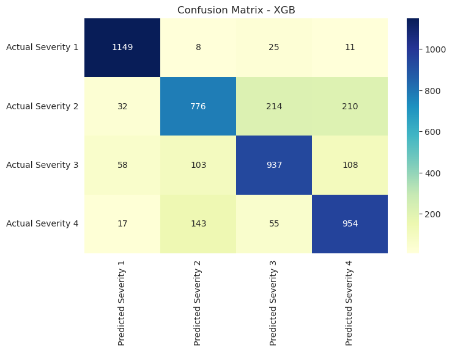
Metrics Scores and Metric Visualizations for XGB with best params
y_pred = xgb.predict(X_val_sample)
accuracy["XGB"] = accuracy_score(y_val_encoded, y_pred)
f1["XGB"] = f1_score(y_val_encoded, y_pred, average="macro")
print(classification_report(y_train_encoded, xgb.predict(X_train_sample)))
print(classification_report(y_val_encoded, y_pred)) precision recall f1-score support
0 0.94 0.97 0.96 4822
1 0.86 0.74 0.80 4734
2 0.84 0.87 0.86 4865
3 0.84 0.89 0.86 4779
accuracy 0.87 19200
macro avg 0.87 0.87 0.87 19200
weighted avg 0.87 0.87 0.87 19200
precision recall f1-score support
0 0.91 0.96 0.94 1193
1 0.75 0.63 0.69 1232
2 0.76 0.78 0.77 1206
3 0.74 0.82 0.78 1169
accuracy 0.80 4800
macro avg 0.79 0.80 0.79 4800
weighted avg 0.79 0.80 0.79 4800
XGB Precision vs Recall Curve on Validation Set
Y = label_binarize(y_val_encoded, classes=[0, 1, 2, 3])
y_score = xgb.predict_proba(X_val_sample)
precision["XGB"], recall["XGB"], _ = precision_recall_curve(Y.ravel(), y_score.ravel())
fpr["XGB"], tpr["XGB"], _ = roc_curve(Y.ravel(), y_score.ravel())
plt.figure(figsize=(18, 10))
plt.step(recall["XGB"], precision["XGB"], where="post")
plt.xlabel("Recall")
plt.ylabel("Precision")
plt.xlim([0, 1])
plt.ylim([0, 1.01])
plt.title("PR Curve - XGB")
plt.show()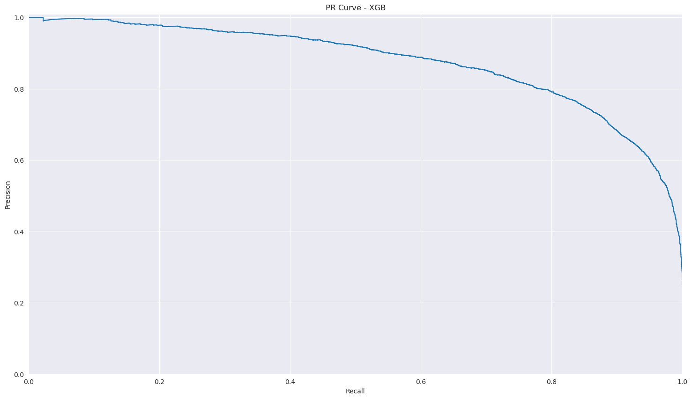
XGB ROC Curve on Validation Set
plt.figure(figsize=(18, 10))
plt.step(fpr["XGB"], tpr["XGB"], where="post")
plt.title("ROC curve - XGB")
plt.xlabel("False Positive Rate")
plt.ylabel("True Positive Rate")
plt.xlim([0, 1])
plt.ylim([0, 1.01])
plt.show()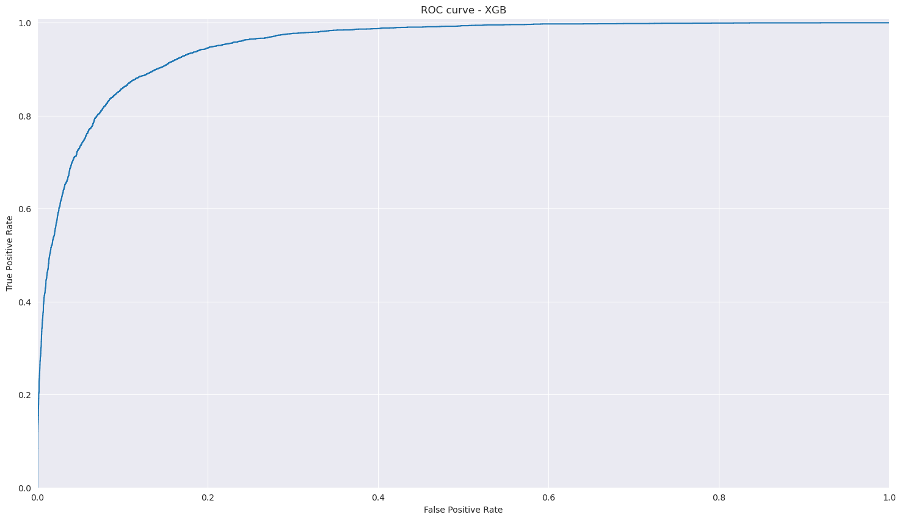
Multi Layer Perceptron
Multi Layer Perceptron Grid Search CV (5 - folds) Run to find best params
mlp = MLPClassifier(random_state=42, verbose=False)
parameters = [{"hidden_layer_sizes": [(64, 32), (32, 64, 32)], "max_iter": [200], "solver": ["sgd", "adam"], "activation": ["tanh", "relu"]}]
grid = GridSearchCV(mlp, parameters, verbose = 0, n_jobs=-1)
grid.fit(X_train_sample, y_train_sample)
print("Best parameters scores:")
print(grid.best_params_)
best_params["mlp"] = grid.best_params_
print("Train score:", grid.score(X_train_sample, y_train_sample))
print("Validation score:", grid.score(X_val_sample, y_val_sample))/opt/conda/lib/python3.10/site-packages/sklearn/neural_network/_multilayer_perceptron.py:686: ConvergenceWarning: Stochastic Optimizer: Maximum iterations (200) reached and the optimization hasn't converged yet.
warnings.warn(
/opt/conda/lib/python3.10/site-packages/sklearn/neural_network/_multilayer_perceptron.py:686: ConvergenceWarning: Stochastic Optimizer: Maximum iterations (200) reached and the optimization hasn't converged yet.
warnings.warn(
/opt/conda/lib/python3.10/site-packages/sklearn/neural_network/_multilayer_perceptron.py:686: ConvergenceWarning: Stochastic Optimizer: Maximum iterations (200) reached and the optimization hasn't converged yet.
warnings.warn(
/opt/conda/lib/python3.10/site-packages/sklearn/neural_network/_multilayer_perceptron.py:686: ConvergenceWarning: Stochastic Optimizer: Maximum iterations (200) reached and the optimization hasn't converged yet.
warnings.warn(
/opt/conda/lib/python3.10/site-packages/sklearn/neural_network/_multilayer_perceptron.py:686: ConvergenceWarning: Stochastic Optimizer: Maximum iterations (200) reached and the optimization hasn't converged yet.
warnings.warn(
/opt/conda/lib/python3.10/site-packages/sklearn/neural_network/_multilayer_perceptron.py:686: ConvergenceWarning: Stochastic Optimizer: Maximum iterations (200) reached and the optimization hasn't converged yet.
warnings.warn(
/opt/conda/lib/python3.10/site-packages/sklearn/neural_network/_multilayer_perceptron.py:686: ConvergenceWarning: Stochastic Optimizer: Maximum iterations (200) reached and the optimization hasn't converged yet.
warnings.warn(
/opt/conda/lib/python3.10/site-packages/sklearn/neural_network/_multilayer_perceptron.py:686: ConvergenceWarning: Stochastic Optimizer: Maximum iterations (200) reached and the optimization hasn't converged yet.
warnings.warn(
/opt/conda/lib/python3.10/site-packages/sklearn/neural_network/_multilayer_perceptron.py:686: ConvergenceWarning: Stochastic Optimizer: Maximum iterations (200) reached and the optimization hasn't converged yet.
warnings.warn(
/opt/conda/lib/python3.10/site-packages/sklearn/neural_network/_multilayer_perceptron.py:686: ConvergenceWarning: Stochastic Optimizer: Maximum iterations (200) reached and the optimization hasn't converged yet.
warnings.warn(
/opt/conda/lib/python3.10/site-packages/sklearn/neural_network/_multilayer_perceptron.py:686: ConvergenceWarning: Stochastic Optimizer: Maximum iterations (200) reached and the optimization hasn't converged yet.
warnings.warn(
/opt/conda/lib/python3.10/site-packages/sklearn/neural_network/_multilayer_perceptron.py:686: ConvergenceWarning: Stochastic Optimizer: Maximum iterations (200) reached and the optimization hasn't converged yet.
warnings.warn(
/opt/conda/lib/python3.10/site-packages/sklearn/neural_network/_multilayer_perceptron.py:686: ConvergenceWarning: Stochastic Optimizer: Maximum iterations (200) reached and the optimization hasn't converged yet.
warnings.warn(
/opt/conda/lib/python3.10/site-packages/sklearn/neural_network/_multilayer_perceptron.py:686: ConvergenceWarning: Stochastic Optimizer: Maximum iterations (200) reached and the optimization hasn't converged yet.
warnings.warn(
/opt/conda/lib/python3.10/site-packages/sklearn/neural_network/_multilayer_perceptron.py:686: ConvergenceWarning: Stochastic Optimizer: Maximum iterations (200) reached and the optimization hasn't converged yet.
warnings.warn(
/opt/conda/lib/python3.10/site-packages/sklearn/neural_network/_multilayer_perceptron.py:686: ConvergenceWarning: Stochastic Optimizer: Maximum iterations (200) reached and the optimization hasn't converged yet.
warnings.warn(
/opt/conda/lib/python3.10/site-packages/sklearn/neural_network/_multilayer_perceptron.py:686: ConvergenceWarning: Stochastic Optimizer: Maximum iterations (200) reached and the optimization hasn't converged yet.
warnings.warn(
/opt/conda/lib/python3.10/site-packages/sklearn/neural_network/_multilayer_perceptron.py:686: ConvergenceWarning: Stochastic Optimizer: Maximum iterations (200) reached and the optimization hasn't converged yet.
warnings.warn(
/opt/conda/lib/python3.10/site-packages/sklearn/neural_network/_multilayer_perceptron.py:686: ConvergenceWarning: Stochastic Optimizer: Maximum iterations (200) reached and the optimization hasn't converged yet.
warnings.warn(
/opt/conda/lib/python3.10/site-packages/sklearn/neural_network/_multilayer_perceptron.py:686: ConvergenceWarning: Stochastic Optimizer: Maximum iterations (200) reached and the optimization hasn't converged yet.
warnings.warn(
/opt/conda/lib/python3.10/site-packages/sklearn/neural_network/_multilayer_perceptron.py:686: ConvergenceWarning: Stochastic Optimizer: Maximum iterations (200) reached and the optimization hasn't converged yet.
warnings.warn(
/opt/conda/lib/python3.10/site-packages/sklearn/neural_network/_multilayer_perceptron.py:686: ConvergenceWarning: Stochastic Optimizer: Maximum iterations (200) reached and the optimization hasn't converged yet.
warnings.warn(
/opt/conda/lib/python3.10/site-packages/sklearn/neural_network/_multilayer_perceptron.py:686: ConvergenceWarning: Stochastic Optimizer: Maximum iterations (200) reached and the optimization hasn't converged yet.
warnings.warn(
/opt/conda/lib/python3.10/site-packages/sklearn/neural_network/_multilayer_perceptron.py:686: ConvergenceWarning: Stochastic Optimizer: Maximum iterations (200) reached and the optimization hasn't converged yet.
warnings.warn(
/opt/conda/lib/python3.10/site-packages/sklearn/neural_network/_multilayer_perceptron.py:686: ConvergenceWarning: Stochastic Optimizer: Maximum iterations (200) reached and the optimization hasn't converged yet.
warnings.warn(
/opt/conda/lib/python3.10/site-packages/sklearn/neural_network/_multilayer_perceptron.py:686: ConvergenceWarning: Stochastic Optimizer: Maximum iterations (200) reached and the optimization hasn't converged yet.
warnings.warn(
/opt/conda/lib/python3.10/site-packages/sklearn/neural_network/_multilayer_perceptron.py:686: ConvergenceWarning: Stochastic Optimizer: Maximum iterations (200) reached and the optimization hasn't converged yet.
warnings.warn(
/opt/conda/lib/python3.10/site-packages/sklearn/neural_network/_multilayer_perceptron.py:686: ConvergenceWarning: Stochastic Optimizer: Maximum iterations (200) reached and the optimization hasn't converged yet.
warnings.warn(
/opt/conda/lib/python3.10/site-packages/sklearn/neural_network/_multilayer_perceptron.py:686: ConvergenceWarning: Stochastic Optimizer: Maximum iterations (200) reached and the optimization hasn't converged yet.
warnings.warn(
/opt/conda/lib/python3.10/site-packages/sklearn/neural_network/_multilayer_perceptron.py:686: ConvergenceWarning: Stochastic Optimizer: Maximum iterations (200) reached and the optimization hasn't converged yet.
warnings.warn(
/opt/conda/lib/python3.10/site-packages/sklearn/neural_network/_multilayer_perceptron.py:686: ConvergenceWarning: Stochastic Optimizer: Maximum iterations (200) reached and the optimization hasn't converged yet.
warnings.warn(
/opt/conda/lib/python3.10/site-packages/sklearn/neural_network/_multilayer_perceptron.py:686: ConvergenceWarning: Stochastic Optimizer: Maximum iterations (200) reached and the optimization hasn't converged yet.
warnings.warn(
/opt/conda/lib/python3.10/site-packages/sklearn/neural_network/_multilayer_perceptron.py:686: ConvergenceWarning: Stochastic Optimizer: Maximum iterations (200) reached and the optimization hasn't converged yet.
warnings.warn(
/opt/conda/lib/python3.10/site-packages/sklearn/neural_network/_multilayer_perceptron.py:686: ConvergenceWarning: Stochastic Optimizer: Maximum iterations (200) reached and the optimization hasn't converged yet.
warnings.warn(
/opt/conda/lib/python3.10/site-packages/sklearn/neural_network/_multilayer_perceptron.py:686: ConvergenceWarning: Stochastic Optimizer: Maximum iterations (200) reached and the optimization hasn't converged yet.
warnings.warn(
/opt/conda/lib/python3.10/site-packages/sklearn/neural_network/_multilayer_perceptron.py:686: ConvergenceWarning: Stochastic Optimizer: Maximum iterations (200) reached and the optimization hasn't converged yet.
warnings.warn(
/opt/conda/lib/python3.10/site-packages/sklearn/neural_network/_multilayer_perceptron.py:686: ConvergenceWarning: Stochastic Optimizer: Maximum iterations (200) reached and the optimization hasn't converged yet.
warnings.warn(
/opt/conda/lib/python3.10/site-packages/sklearn/neural_network/_multilayer_perceptron.py:686: ConvergenceWarning: Stochastic Optimizer: Maximum iterations (200) reached and the optimization hasn't converged yet.
warnings.warn(
/opt/conda/lib/python3.10/site-packages/sklearn/neural_network/_multilayer_perceptron.py:686: ConvergenceWarning: Stochastic Optimizer: Maximum iterations (200) reached and the optimization hasn't converged yet.
warnings.warn(
/opt/conda/lib/python3.10/site-packages/sklearn/neural_network/_multilayer_perceptron.py:686: ConvergenceWarning: Stochastic Optimizer: Maximum iterations (200) reached and the optimization hasn't converged yet.
warnings.warn(
/opt/conda/lib/python3.10/site-packages/sklearn/neural_network/_multilayer_perceptron.py:686: ConvergenceWarning: Stochastic Optimizer: Maximum iterations (200) reached and the optimization hasn't converged yet.
warnings.warn(Best parameters scores:
{'activation': 'tanh', 'hidden_layer_sizes': (64, 32), 'max_iter': 200, 'solver': 'adam'}
Train score: 0.8189583333333333
Validation score: 0.7510416666666667pd.DataFrame(grid.cv_results_).sort_values(by="rank_test_score")| mean_fit_time | std_fit_time | mean_score_time | std_score_time | param_activation | param_hidden_layer_sizes | param_max_iter | param_solver | params | split0_test_score | split1_test_score | split2_test_score | split3_test_score | split4_test_score | mean_test_score | std_test_score | rank_test_score | |
|---|---|---|---|---|---|---|---|---|---|---|---|---|---|---|---|---|---|
| 1 | 19.106705 | 0.435495 | 0.009255 | 0.000457 | tanh | (64, 32) | 200 | adam | {'activation': 'tanh', 'hidden_layer_sizes': (... | 0.756250 | 0.752865 | 0.740885 | 0.762500 | 0.755208 | 0.753542 | 0.007085 | 1 |
| 6 | 22.971275 | 0.389052 | 0.008846 | 0.000471 | relu | (32, 64, 32) | 200 | sgd | {'activation': 'relu', 'hidden_layer_sizes': (... | 0.754167 | 0.746615 | 0.741146 | 0.761458 | 0.757812 | 0.752240 | 0.007409 | 2 |
| 3 | 23.115873 | 0.363470 | 0.010795 | 0.002369 | tanh | (32, 64, 32) | 200 | adam | {'activation': 'tanh', 'hidden_layer_sizes': (... | 0.742969 | 0.749740 | 0.746354 | 0.761458 | 0.754687 | 0.751042 | 0.006491 | 3 |
| 2 | 20.719785 | 0.305517 | 0.009857 | 0.000625 | tanh | (32, 64, 32) | 200 | sgd | {'activation': 'tanh', 'hidden_layer_sizes': (... | 0.748958 | 0.743490 | 0.734635 | 0.752604 | 0.757812 | 0.747500 | 0.007951 | 4 |
| 5 | 24.164772 | 0.728618 | 0.011189 | 0.004261 | relu | (64, 32) | 200 | adam | {'activation': 'relu', 'hidden_layer_sizes': (... | 0.742708 | 0.752344 | 0.733333 | 0.754167 | 0.737760 | 0.744062 | 0.008091 | 5 |
| 4 | 19.729288 | 0.366591 | 0.009005 | 0.000415 | relu | (64, 32) | 200 | sgd | {'activation': 'relu', 'hidden_layer_sizes': (... | 0.744531 | 0.736198 | 0.731510 | 0.751563 | 0.747396 | 0.742240 | 0.007354 | 6 |
| 7 | 28.641310 | 3.188170 | 0.009927 | 0.002859 | relu | (32, 64, 32) | 200 | adam | {'activation': 'relu', 'hidden_layer_sizes': (... | 0.749740 | 0.742188 | 0.734375 | 0.745313 | 0.738542 | 0.742031 | 0.005310 | 7 |
| 0 | 16.518863 | 0.566479 | 0.011748 | 0.003198 | tanh | (64, 32) | 200 | sgd | {'activation': 'tanh', 'hidden_layer_sizes': (... | 0.730729 | 0.725260 | 0.714323 | 0.737760 | 0.732812 | 0.728177 | 0.008004 | 8 |
Running the best params Multi Layer Perceptron Model
print("Best Param scores for Multi Layer Perceptron:")
mlp = MLPClassifier(**grid.best_params_, random_state=42)
mlp.fit(X_train_sample, y_train_sample)
# Storing the model trained with best params later used for visualizations
models["Multi Layer Perceptron"] = mlp
print("Train Score: ", mlp.score(X_train_sample, y_train_sample))
print("Validation Score: ", mlp.score(X_val_sample, y_val_sample))Best Param scores for Multi Layer Perceptron:
Train Score: 0.8189583333333333
Validation Score: 0.7510416666666667/opt/conda/lib/python3.10/site-packages/sklearn/neural_network/_multilayer_perceptron.py:686: ConvergenceWarning: Stochastic Optimizer: Maximum iterations (200) reached and the optimization hasn't converged yet.
warnings.warn(Multi Layer Perceptron Conf. Matrix on Validation Set
y_pred = mlp.predict(X_val_sample)
confmat = confusion_matrix(y_true=y_val_sample, y_pred=y_pred)
index = ["Actual Severity 1", "Actual Severity 2", "Actual Severity 3", "Actual Severity 4"]
columns = ["Predicted Severity 1", "Predicted Severity 2", "Predicted Severity 3", "Predicted Severity 4"]
conf_matrix = pd.DataFrame(data=confmat, columns=columns, index=index)
plt.figure(figsize=(8, 5))
sns.heatmap(conf_matrix, annot=True, fmt="d", cmap="YlGnBu")
plt.title("Confusion Matrix - Multi Layer Perceptron")
plt.show()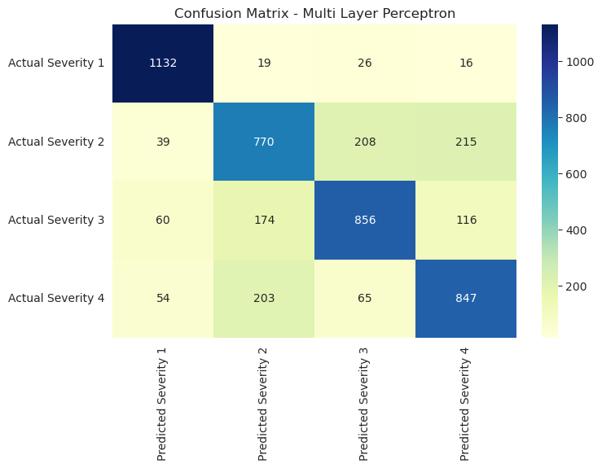
Metrics Scores and Metric Visualizations for Multi Layer Perceptron with best params
y_pred = mlp.predict(X_val_sample)
accuracy["Multi Layer Perceptron"] = accuracy_score(y_val_sample, y_pred)
f1["Multi Layer Perceptron"] = f1_score(y_val_sample, y_pred, average="macro")
print(classification_report(y_train_sample, mlp.predict(X_train_sample)))
print(classification_report(y_val_sample, y_pred)) precision recall f1-score support
1 0.91 0.97 0.94 4822
2 0.75 0.72 0.73 4734
3 0.80 0.79 0.80 4865
4 0.81 0.79 0.80 4779
accuracy 0.82 19200
macro avg 0.82 0.82 0.82 19200
weighted avg 0.82 0.82 0.82 19200
precision recall f1-score support
1 0.88 0.95 0.91 1193
2 0.66 0.62 0.64 1232
3 0.74 0.71 0.73 1206
4 0.71 0.72 0.72 1169
accuracy 0.75 4800
macro avg 0.75 0.75 0.75 4800
weighted avg 0.75 0.75 0.75 4800
Multi Layer Perceptron Precision vs Recall Curve on Validation Set
Y = label_binarize(y_val_sample, classes=[1, 2, 3, 4])
y_score = mlp.predict_proba(X_val_sample)
precision["Multi Layer Perceptron"], recall["Multi Layer Perceptron"], _ = precision_recall_curve(Y.ravel(), y_score.ravel())
fpr["Multi Layer Perceptron"], tpr["Multi Layer Perceptron"], _ = roc_curve(Y.ravel(), y_score.ravel())
plt.figure(figsize=(18, 10))
plt.step(recall["Multi Layer Perceptron"], precision["Multi Layer Perceptron"], where="post")
plt.xlabel("Recall")
plt.ylabel("Precision")
plt.xlim([0, 1])
plt.ylim([0, 1.01])
plt.title("PR Curve - Multi Layer Perceptron")
plt.show()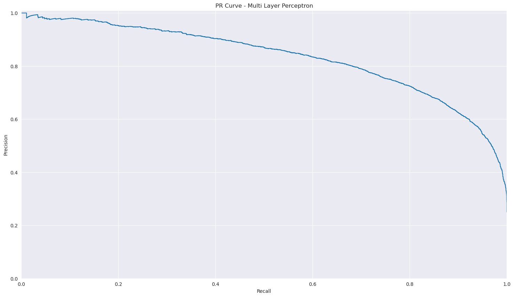
Multi Layer Perceptron ROC Curve on Validation Set
plt.figure(figsize=(18, 10))
plt.step(fpr["Multi Layer Perceptron"], tpr["Multi Layer Perceptron"], where="post")
plt.title("ROC curve - Multi Layer Perceptron")
plt.xlabel("False Positive Rate")
plt.ylabel("True Positive Rate")
plt.xlim([0, 1])
plt.ylim([0, 1.01])
plt.show()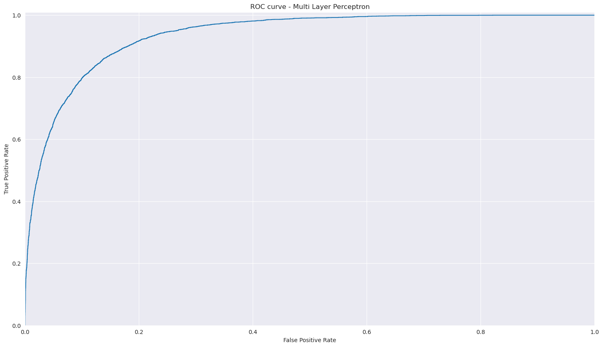
Support Vector Machine
Grid Search CV(5-folds) RUN to find best Params
parameters = [{"kernel": ["linear", "rbf", "sigmoid"], "C": [.2, .5, .8, 1.]}, {"kernel": ["poly"], "C": [.2, .5, .8, 1.], "degree": [2, 3, 4]}]
svc = svm.SVC(verbose = 0, random_state = 42, shrinking = False)
grid = GridSearchCV(svc, parameters, verbose = 0, n_jobs = -1)
grid.fit(X_sample_train,y_sample_train)
print("Best parameters scores:")
print(grid.best_params_)
best_params["svc"] = grid.best_params_
print("Train score: ", grid.score(X_sample_train, y_sample_train))Best parameters scores:
{'C': 1.0, 'kernel': 'rbf'}
Train score: 0.7429166666666667pd.DataFrame(grid.cv_results_).sort_values(by="rank_test_score")| mean_fit_time | std_fit_time | mean_score_time | std_score_time | param_C | param_kernel | param_degree | params | split0_test_score | split1_test_score | split2_test_score | split3_test_score | split4_test_score | mean_test_score | std_test_score | rank_test_score | |
|---|---|---|---|---|---|---|---|---|---|---|---|---|---|---|---|---|
| 10 | 32.260032 | 0.143948 | 8.945977 | 0.487535 | 1.0 | rbf | NaN | {'C': 1.0, 'kernel': 'rbf'} | 0.732500 | 0.729792 | 0.716875 | 0.716875 | 0.737708 | 0.726750 | 0.008455 | 1 |
| 23 | 27.574225 | 4.497365 | 3.685331 | 0.800828 | 1.0 | poly | 4 | {'C': 1.0, 'degree': 4, 'kernel': 'poly'} | 0.734375 | 0.731042 | 0.716875 | 0.716250 | 0.728125 | 0.725333 | 0.007432 | 2 |
| 22 | 26.673938 | 0.587722 | 4.095733 | 0.269865 | 1.0 | poly | 3 | {'C': 1.0, 'degree': 3, 'kernel': 'poly'} | 0.734583 | 0.730208 | 0.714375 | 0.715833 | 0.730625 | 0.725125 | 0.008336 | 3 |
| 7 | 31.650738 | 0.603531 | 8.659305 | 0.425884 | 0.8 | rbf | NaN | {'C': 0.8, 'kernel': 'rbf'} | 0.730625 | 0.727708 | 0.717292 | 0.715625 | 0.733542 | 0.724958 | 0.007201 | 4 |
| 20 | 28.384177 | 0.358249 | 4.026727 | 0.120665 | 0.8 | poly | 4 | {'C': 0.8, 'degree': 4, 'kernel': 'poly'} | 0.735000 | 0.728750 | 0.716250 | 0.716042 | 0.727083 | 0.724625 | 0.007410 | 5 |
| 19 | 26.849181 | 0.535798 | 3.905945 | 0.042064 | 0.8 | poly | 3 | {'C': 0.8, 'degree': 3, 'kernel': 'poly'} | 0.731875 | 0.727083 | 0.713333 | 0.715625 | 0.727708 | 0.723125 | 0.007285 | 6 |
| 17 | 28.644837 | 0.279786 | 4.240965 | 0.122288 | 0.5 | poly | 4 | {'C': 0.5, 'degree': 4, 'kernel': 'poly'} | 0.729375 | 0.725833 | 0.714583 | 0.711667 | 0.724792 | 0.721250 | 0.006868 | 7 |
| 4 | 30.592421 | 0.220757 | 8.872729 | 0.275204 | 0.5 | rbf | NaN | {'C': 0.5, 'kernel': 'rbf'} | 0.727083 | 0.724375 | 0.712917 | 0.711042 | 0.725417 | 0.720167 | 0.006767 | 8 |
| 16 | 26.924972 | 0.411861 | 4.175091 | 0.081210 | 0.5 | poly | 3 | {'C': 0.5, 'degree': 3, 'kernel': 'poly'} | 0.728125 | 0.725208 | 0.712083 | 0.710417 | 0.723542 | 0.719875 | 0.007213 | 9 |
| 21 | 25.660745 | 0.220622 | 3.786673 | 0.033971 | 1.0 | poly | 2 | {'C': 1.0, 'degree': 2, 'kernel': 'poly'} | 0.728333 | 0.723333 | 0.710000 | 0.710208 | 0.724583 | 0.719292 | 0.007680 | 10 |
| 18 | 27.656106 | 0.190797 | 4.025929 | 0.132961 | 0.8 | poly | 2 | {'C': 0.8, 'degree': 2, 'kernel': 'poly'} | 0.727083 | 0.720208 | 0.707708 | 0.708542 | 0.722708 | 0.717250 | 0.007773 | 11 |
| 15 | 26.182213 | 0.646138 | 4.284178 | 0.215900 | 0.5 | poly | 2 | {'C': 0.5, 'degree': 2, 'kernel': 'poly'} | 0.721875 | 0.717500 | 0.704167 | 0.701250 | 0.718333 | 0.712625 | 0.008281 | 12 |
| 14 | 26.844376 | 0.167522 | 4.344861 | 0.056929 | 0.2 | poly | 4 | {'C': 0.2, 'degree': 4, 'kernel': 'poly'} | 0.718125 | 0.714583 | 0.707708 | 0.701042 | 0.719792 | 0.712250 | 0.006973 | 13 |
| 13 | 26.483538 | 0.216705 | 4.263598 | 0.081068 | 0.2 | poly | 3 | {'C': 0.2, 'degree': 3, 'kernel': 'poly'} | 0.718750 | 0.717917 | 0.703125 | 0.700625 | 0.717917 | 0.711667 | 0.008040 | 14 |
| 1 | 32.616739 | 0.553255 | 9.559076 | 0.390377 | 0.2 | rbf | NaN | {'C': 0.2, 'kernel': 'rbf'} | 0.716042 | 0.710833 | 0.701875 | 0.697917 | 0.715833 | 0.708500 | 0.007376 | 15 |
| 12 | 26.256505 | 0.277525 | 4.265289 | 0.069630 | 0.2 | poly | 2 | {'C': 0.2, 'degree': 2, 'kernel': 'poly'} | 0.710208 | 0.707917 | 0.694792 | 0.690000 | 0.709792 | 0.702542 | 0.008457 | 16 |
| 9 | 39.759664 | 3.014081 | 4.062565 | 0.184938 | 1.0 | linear | NaN | {'C': 1.0, 'kernel': 'linear'} | 0.707500 | 0.703958 | 0.688542 | 0.695000 | 0.707917 | 0.700583 | 0.007605 | 17 |
| 6 | 37.558125 | 1.867674 | 4.326769 | 0.308217 | 0.8 | linear | NaN | {'C': 0.8, 'kernel': 'linear'} | 0.707500 | 0.703542 | 0.688750 | 0.695208 | 0.707292 | 0.700458 | 0.007354 | 18 |
| 3 | 32.760351 | 1.825576 | 4.020657 | 0.227193 | 0.5 | linear | NaN | {'C': 0.5, 'kernel': 'linear'} | 0.706250 | 0.701250 | 0.688333 | 0.694375 | 0.706667 | 0.699375 | 0.007083 | 19 |
| 0 | 27.609676 | 0.675959 | 3.929613 | 0.140739 | 0.2 | linear | NaN | {'C': 0.2, 'kernel': 'linear'} | 0.704792 | 0.701458 | 0.686250 | 0.693125 | 0.705000 | 0.698125 | 0.007333 | 20 |
| 2 | 48.653246 | 0.532096 | 9.786308 | 0.296511 | 0.2 | sigmoid | NaN | {'C': 0.2, 'kernel': 'sigmoid'} | 0.485625 | 0.496250 | 0.490208 | 0.499167 | 0.492500 | 0.492750 | 0.004706 | 21 |
| 5 | 44.946205 | 1.873551 | 9.529393 | 0.316044 | 0.5 | sigmoid | NaN | {'C': 0.5, 'kernel': 'sigmoid'} | 0.433125 | 0.441458 | 0.439375 | 0.453750 | 0.443958 | 0.442333 | 0.006742 | 22 |
| 8 | 40.732482 | 1.281626 | 8.942905 | 0.369305 | 0.8 | sigmoid | NaN | {'C': 0.8, 'kernel': 'sigmoid'} | 0.415000 | 0.425000 | 0.422292 | 0.451042 | 0.432292 | 0.429125 | 0.012277 | 23 |
| 11 | 38.995517 | 1.054987 | 8.819515 | 0.168747 | 1.0 | sigmoid | NaN | {'C': 1.0, 'kernel': 'sigmoid'} | 0.411042 | 0.422292 | 0.420208 | 0.452708 | 0.429375 | 0.427125 | 0.014067 | 24 |
Running the best params SVM model
### We run the model on partial Dataset for fast training and observing the op/s.
print("Best Param scores for SVM:")
svc = svm.SVC(verbose = 0, random_state = 42, shrinking = False, C=1, kernel = 'rbf', degree = 4)
svc.fit(X_train_sample, y_train_sample)
# Storing the model trained with best params later used for visualizations
models["Support Vector Machine"] = svc
print("Train score:", svc.score(X_train_sample, y_train_sample))
print("Validation score:", svc.score(X_val_sample, y_val_sample))Best Param scores for SVM:
Train score: 0.7433333333333333
Validation score: 0.7204166666666667SVM Conf. Matrix on Validation set
y_pred = svc.predict(X_val_sample)
confmat = confusion_matrix(y_true=y_val_sample, y_pred=y_pred)
index = ["Actual Severity 1", "Actual Severity 2", "Actual Severity 3", "Actual Severity 4"]
columns = ["Predicted Severity 1", "Predicted Severity 2", "Predicted Severity 3", "Predicted Severity 4"]
conf_matrix = pd.DataFrame(data=confmat, columns=columns, index=index)
plt.figure(figsize=(8, 5))
sns.heatmap(conf_matrix, annot=True, fmt="d", cmap="YlGnBu")
plt.title("Confusion Matrix - Support Vector Machine")
plt.show()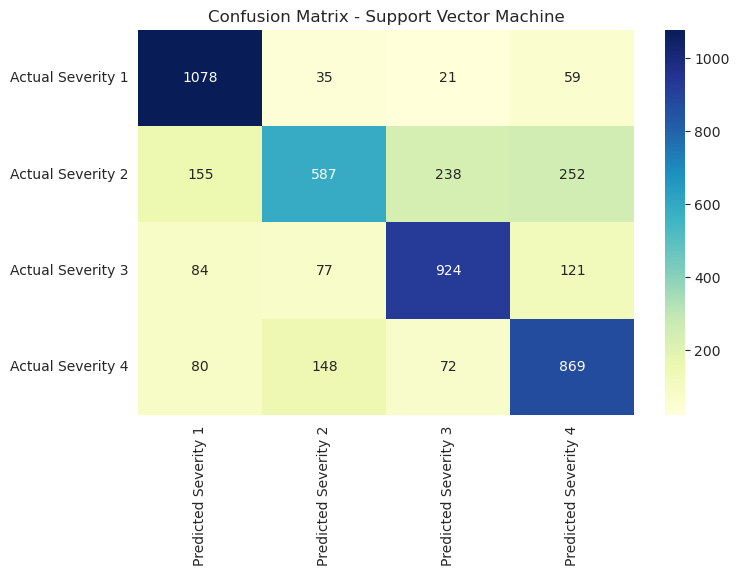
Metrics Scores and Metric Visualizations for SVM with best params
y_pred = svc.predict(X_val_sample)
accuracy["SVM"] = accuracy_score(y_val_sample, y_pred)
f1["SVM"] = f1_score(y_val_sample, y_pred, average="macro")
print(classification_report(y_train_sample, svc.predict(X_train_sample)))
print(classification_report(y_val_sample, y_pred)) precision recall f1-score support
1 0.80 0.91 0.85 4822
2 0.72 0.50 0.59 4734
3 0.74 0.80 0.77 4865
4 0.70 0.76 0.73 4779
accuracy 0.74 19200
macro avg 0.74 0.74 0.73 19200
weighted avg 0.74 0.74 0.74 19200
precision recall f1-score support
1 0.77 0.90 0.83 1193
2 0.69 0.48 0.56 1232
3 0.74 0.77 0.75 1206
4 0.67 0.74 0.70 1169
accuracy 0.72 4800
macro avg 0.72 0.72 0.71 4800
weighted avg 0.72 0.72 0.71 4800
SVM Precision vs Recall Curve on Validation set
Y = label_binarize(y_val_sample, classes=[1, 2, 3, 4])
y_score = svc.decision_function(X_val_sample)
precision["SVM"], recall["SVM"], _ = precision_recall_curve(Y.ravel(), y_score.ravel())
fpr["SVM"], tpr["SVM"], _ = roc_curve(Y.ravel(), y_score.ravel())
plt.figure(figsize=(18, 10))
plt.step(recall["SVM"], precision["SVM"], where="post")
plt.xlabel("Recall")
plt.ylabel("Precision")
plt.xlim([0, 1])
plt.ylim([0, 1.01])
plt.title("PR Curve - Support Vector Machine")
plt.show()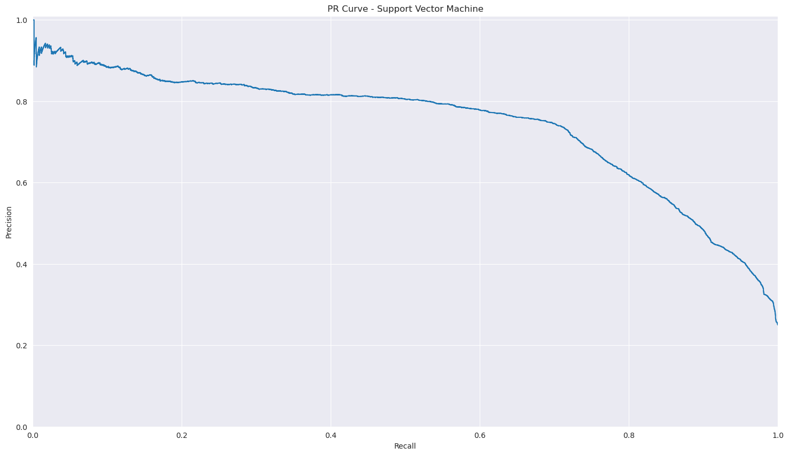
SVM ROC Curve on Validation set
plt.figure(figsize=(18, 10))
plt.step(fpr["SVM"], tpr["SVM"], where="post")
plt.title("ROC curve - Support Vector Machine")
plt.xlabel("False Positive Rate")
plt.ylabel("True Positive Rate")
plt.xlim([0, 1])
plt.ylim([0, 1.01])
plt.show()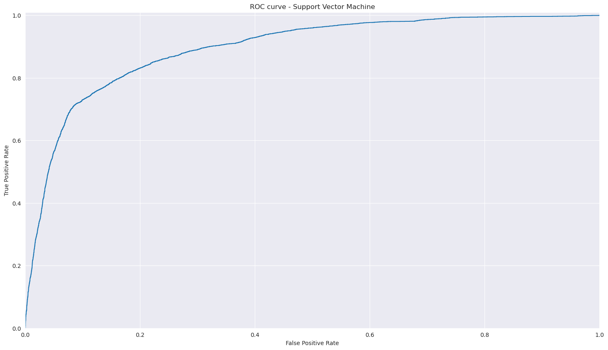
Result and Comparisions after Training on Partial Data
- Partial data is used to train since models like SVM can’t train on the whole dataset, efficiently, until Kaggle notebook Time’s Out.
- So we use partial data to train the model and then select the best of these by comparing results on Validation data
Accuracy Metric Comparision between Models
plt.figure(figsize=(20, 8))
plt.title("Accuracy on Validation Set for Each Model")
sorted_accuracy = sorted(accuracy.items(), key=lambda x: x[1])
sorted_labels = [item[0] for item in sorted_accuracy]
sorted_values = [item[1] for item in sorted_accuracy]
sns.barplot(x=sorted_labels, y=sorted_values)
plt.xticks(rotation=90)
plt.xlabel("Model")
plt.ylabel("Accuracy")
plt.savefig("All_Models_Accuracy_Score_Plot_on_Val_Set.png",bbox_inches = 'tight', dpi = 300)
plt.show()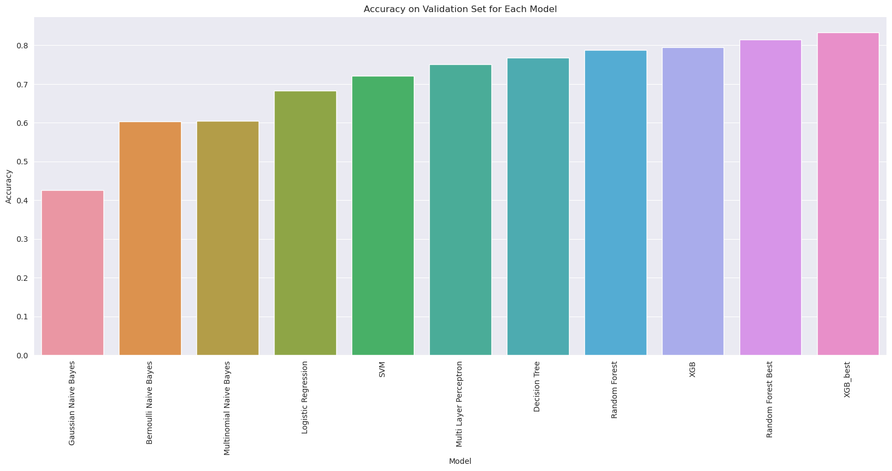
F1-Score Metric Comparision between Models
plt.figure(figsize=(20, 8))
plt.title("F1 Score on Validation set for each model")
sorted_f1 = sorted(f1.items(), key=lambda x: x[1])
sorted_labels = [item[0] for item in sorted_f1]
sorted_values = [item[1] for item in sorted_f1]
sns.barplot(x=sorted_labels, y=sorted_values)
plt.xticks(rotation=90)
plt.xlabel("Model")
plt.ylabel("F1- Score")
plt.savefig("All_Models_F1_Score_Plot_on_Val_Set.png",bbox_inches = 'tight', dpi = 300)
plt.show()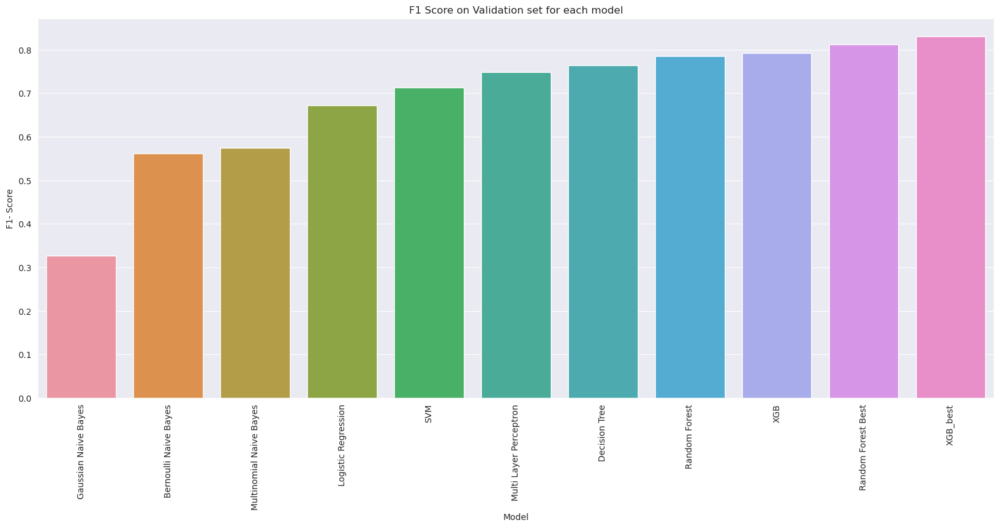
PR Curve Comparision between Models
plt.figure(figsize=(20, 8))
for key in f1.keys():
plt.step(recall[key], precision[key], where="post", label=key)
plt.xlabel("Recall")
plt.ylabel("Precision")
plt.xlim([0, 1])
plt.ylim([0, 1.01])
plt.title("PR curve")
plt.legend()
plt.savefig("All_Models_PR_Curve_plot.png",bbox_inches = 'tight', dpi = 300)
plt.show()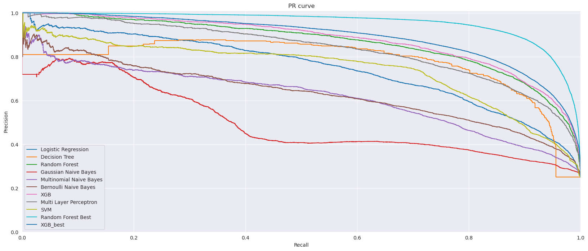
ROC Curve Comparision between Models
plt.figure(figsize=(20, 8))
for key in f1.keys():
plt.step(fpr[key], tpr[key], where="post", label=key)
plt.xlabel("False Positive Rate")
plt.ylabel("True Positive Rate")
plt.xlim([0, 1])
plt.ylim([0, 1.01])
plt.title("ROC curve")
plt.legend()
plt.savefig("All_Models_ROC_Curve_plot.png",bbox_inches = 'tight', dpi = 300)
plt.show()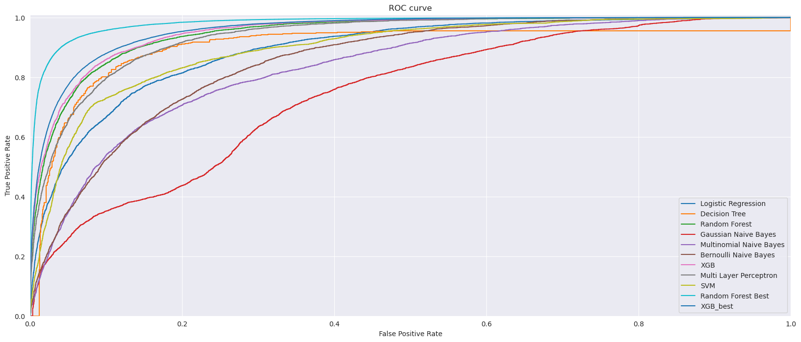
fig, axs = plt.subplots(3, 3, figsize=(18, 12))
axs = axs.ravel()
for i, (name, model) in enumerate(models.items()):
ax = axs[i]
y_pred = model.predict(X_val_sample)
if name == "XGB Classifier":
confmat = confusion_matrix(y_true=y_val_encoded, y_pred=y_pred)
else:
confmat = confusion_matrix(y_true=y_val_sample, y_pred=y_pred)
index = ["Actual Severity 1", "Actual Severity 2", "Actual Severity 3", "Actual Severity 4"]
columns = ["Predicted Severity 1", "Predicted Severity 2", "Predicted Severity 3", "Predicted Severity 4"]
conf_matrix = pd.DataFrame(data=confmat, columns=columns, index=index)
sns.heatmap(conf_matrix, annot=True, fmt="d", cmap="YlGnBu", ax=ax)
ax.set_title(f"Confusion Matrix - {name}")
# Hide the remaining subplots
for j in range(len(models), len(axs)):
axs[j].axis('off')
plt.tight_layout()
plt.savefig("All_Models_Conf_Matrix_Plot.png",bbox_inches = 'tight', dpi = 300)
plt.show()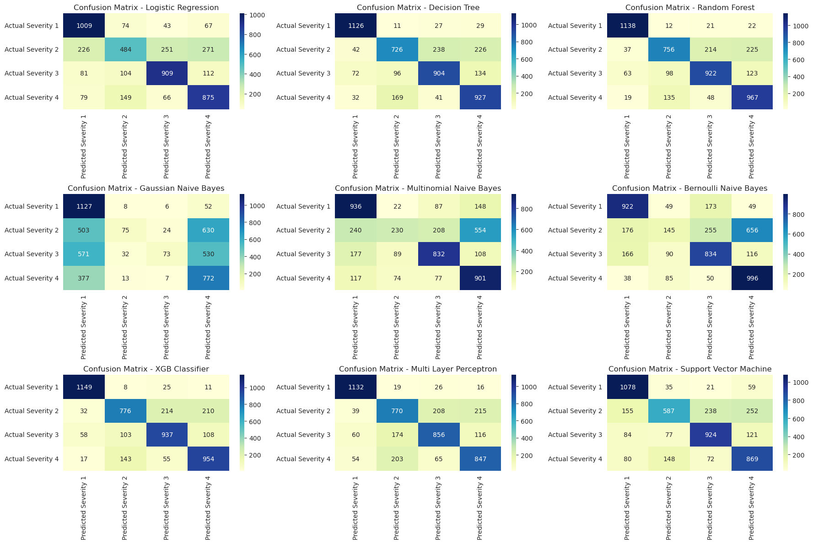
Model Training Observations
- Every model trained at different speeds, I believe this majorly was due to different complexity of models
- By observing the performance metrics and curves on validation data, I think the best models are XGB classifier and Random Forest Classifier
- This can even be observed by the confusion matrices
- We will now train Random Forest Classifier and XGB Classifier with the best params on full dataset and save the pickle files
Best Model Training On Whole Datasets
Random Forest Classifier
print("Random Forest Classifier Scores After Training on Whole Dataset:")
best_rfc = RandomForestClassifier(**best_params['rfc'],random_state = 42)
best_rfc.fit(X_train, y_train)
print("Train Score: ", best_rfc.score(X_train, y_train))
print("Validation Score: ", best_rfc.score(X_val, y_val))Random Forest Classifier Scores After Training on Whole Dataset:
Train Score: 0.9965762117919476
Validation Score: 0.8146111936602278Random Forest Classifier Conf. Matrix on Validation Set
y_pred = best_rfc.predict(X_val)
confmat = confusion_matrix(y_true=y_val, y_pred=y_pred)
index = ["Actual Severity 1", "Actual Severity 2", "Actual Severity 3", "Actual Severity 4"]
columns = ["Predicted Severity 1", "Predicted Severity 2", "Predicted Severity 3", "Predicted Severity 4"]
conf_matrix = pd.DataFrame(data=confmat, columns=columns, index=index)
plt.figure(figsize=(8, 5))
sns.heatmap(conf_matrix, annot=True, fmt="d", cmap="YlGnBu")
plt.title("Confusion Matrix - Random Forest Best")
plt.show()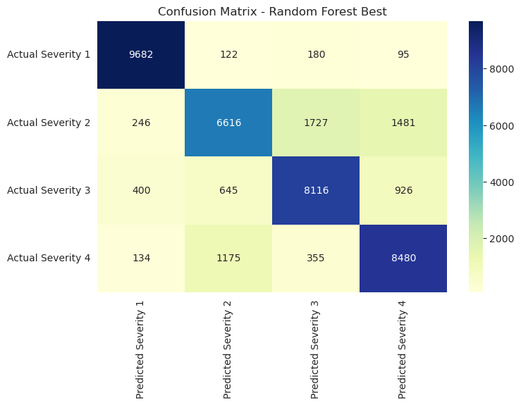
Metrics Scores and Metric Visualizations for Random Forest Classifier with best params
y_pred = best_rfc.predict(X_val)
accuracy["Random Forest Best"] = accuracy_score(y_val, y_pred)
f1["Random Forest Best"] = f1_score(y_val, y_pred, average="macro")
print(classification_report(y_train, best_rfc.predict(X_train)))
print(classification_report(y_val, y_pred)) precision recall f1-score support
1 1.00 1.00 1.00 40486
2 1.00 0.99 1.00 40372
3 0.99 1.00 1.00 40370
4 1.00 1.00 1.00 40289
accuracy 1.00 161517
macro avg 1.00 1.00 1.00 161517
weighted avg 1.00 1.00 1.00 161517
precision recall f1-score support
1 0.93 0.96 0.94 10079
2 0.77 0.66 0.71 10070
3 0.78 0.80 0.79 10087
4 0.77 0.84 0.80 10144
accuracy 0.81 40380
macro avg 0.81 0.81 0.81 40380
weighted avg 0.81 0.81 0.81 40380
Random Forest Classifier Precision vs Recall Curve on Validation Set
Y = label_binarize(y_val, classes=[1, 2, 3, 4])
y_score = rfc.predict_proba(X_val)
precision["Random Forest Best"], recall["Random Forest Best"], _ = precision_recall_curve(Y.ravel(), y_score.ravel())
fpr["Random Forest Best"], tpr["Random Forest Best"], _ = roc_curve(Y.ravel(), y_score.ravel())
plt.figure(figsize=(18, 10))
plt.step(recall["Random Forest Best"], precision["Random Forest Best"], where="post")
plt.xlabel("Recall")
plt.ylabel("Precision")
plt.xlim([0, 1])
plt.ylim([0, 1.01])
plt.title("PR Curve - Random Forest Best")
plt.show()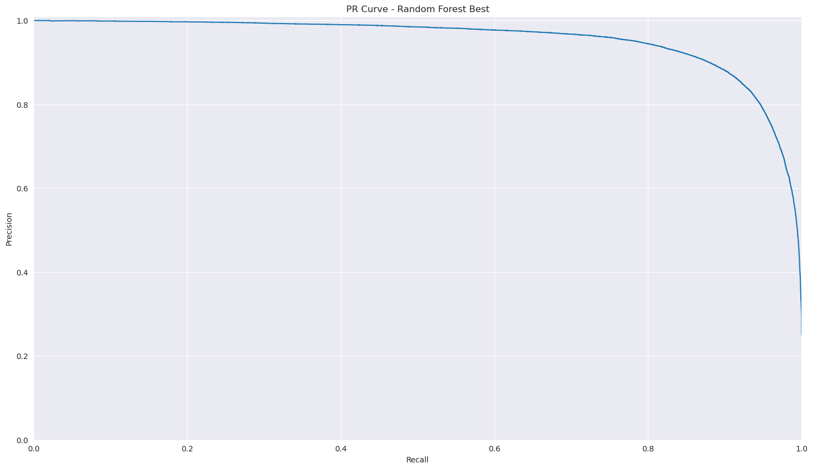
Random Forest Classifier ROC Curve on Validation Set
plt.figure(figsize=(18, 10))
plt.step(fpr["Random Forest Best"], tpr["Random Forest Best"], where="post")
plt.title("ROC curve - Random Forest Best")
plt.xlabel("False Positive Rate")
plt.ylabel("True Positive Rate")
plt.xlim([0, 1])
plt.ylim([0, 1.01])
plt.show()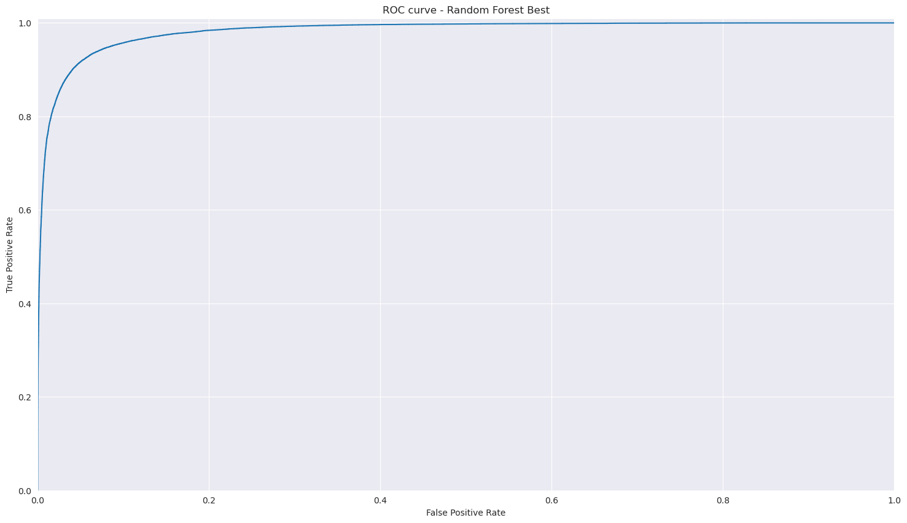
importances = pd.DataFrame(np.zeros((X_train.shape[1], 1)), columns=["importance"], index=X_train.columns)
importances.iloc[:,0] = best_rfc.feature_importances_
importances = importances.sort_values(by="importance", ascending=False)[:30]
plt.figure(figsize=(15, 10))
sns.barplot(x="importance", y=importances.index, data=importances)
plt.show()
XGBoost Classifier
- This algo requires the target labels to start from 0 so we transform the target | Original Label | Encoded Label | | ————– | ————- | | 1 | 0 | | 2 | 1 | | 3 | 2 | | 4 | 3 |
from sklearn.preprocessing import LabelEncoder
# Create an instance of LabelEncoder
label_encoder = LabelEncoder()
# Fit and transform the target variable
y_train_encoded = label_encoder.fit_transform(y_train)
y_val_encoded = label_encoder.transform(y_val)Running the best params XGB Model
print("XGB Classifier Scores After Training on Whole Dataset:")
#
best_xgb = XGBClassifier(**best_params['xgb'],random_state=42)
best_xgb.fit(X_train, y_train_encoded)
print("Train Score: ", best_xgb.score(X_train, y_train_encoded))
print("Validation Score: ", best_xgb.score(X_val, y_val_encoded))XGB Classifier Scores After Training on Whole Dataset:
Train Score: 0.8237894463121529
Validation Score: 0.8105002476473502XGB Conf. Matrix on Validation Set
y_pred = xgb.predict(X_val)
confmat = confusion_matrix(y_true=y_val_encoded, y_pred=y_pred)
index = ["Actual Severity 1", "Actual Severity 2", "Actual Severity 3", "Actual Severity 4"]
columns = ["Predicted Severity 1", "Predicted Severity 2", "Predicted Severity 3", "Predicted Severity 4"]
conf_matrix = pd.DataFrame(data=confmat, columns=columns, index=index)
plt.figure(figsize=(8, 5))
sns.heatmap(conf_matrix, annot=True, fmt="d", cmap="YlGnBu")
plt.title("Confusion Matrix - XGB Best")
plt.show()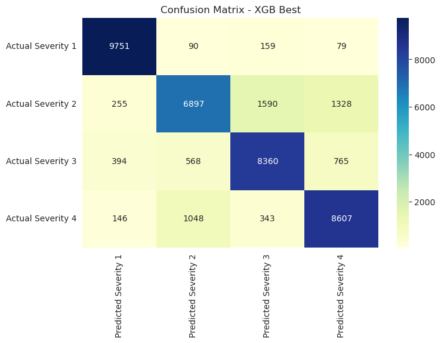
Metrics Scores and Metric Visualizations for XGB with best params
y_pred = xgb.predict(X_val)
accuracy["XGB_best"] = accuracy_score(y_val_encoded, y_pred)
f1["XGB_best"] = f1_score(y_val_encoded, y_pred, average="macro")
print(classification_report(y_train_encoded, best_xgb.predict(X_train)))
print(classification_report(y_val_encoded, y_pred)) precision recall f1-score support
0 0.93 0.96 0.95 40486
1 0.79 0.68 0.73 40372
2 0.79 0.82 0.81 40370
3 0.78 0.83 0.81 40289
accuracy 0.82 161517
macro avg 0.82 0.82 0.82 161517
weighted avg 0.82 0.82 0.82 161517
precision recall f1-score support
0 0.92 0.97 0.95 10079
1 0.80 0.68 0.74 10070
2 0.80 0.83 0.81 10087
3 0.80 0.85 0.82 10144
accuracy 0.83 40380
macro avg 0.83 0.83 0.83 40380
weighted avg 0.83 0.83 0.83 40380
XGB Precision vs Recall Curve on Validation Set
Y = label_binarize(y_val_encoded, classes=[0, 1, 2, 3])
y_score = best_xgb.predict_proba(X_val)
precision["XGB_best"], recall["XGB_best"], _ = precision_recall_curve(Y.ravel(), y_score.ravel())
fpr["XGB_best"], tpr["XGB_best"], _ = roc_curve(Y.ravel(), y_score.ravel())
plt.figure(figsize=(18, 10))
plt.step(recall["XGB_best"], precision["XGB_best"], where="post")
plt.xlabel("Recall")
plt.ylabel("Precision")
plt.xlim([0, 1])
plt.ylim([0, 1.01])
plt.title("PR Curve - XGB_best")
plt.show()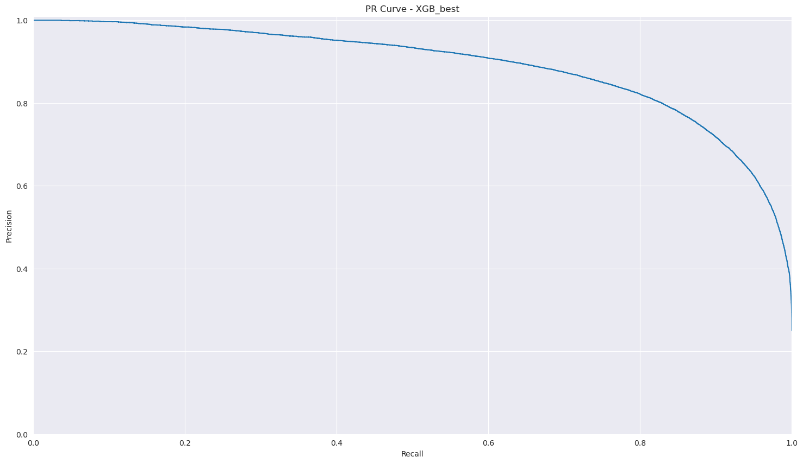
XGB ROC Curve on Validation Set
plt.figure(figsize=(18, 10))
plt.step(fpr["XGB_best"], tpr["XGB_best"], where="post")
plt.title("ROC curve - XGB_best")
plt.xlabel("False Positive Rate")
plt.ylabel("True Positive Rate")
plt.xlim([0, 1])
plt.ylim([0, 1.01])
plt.show()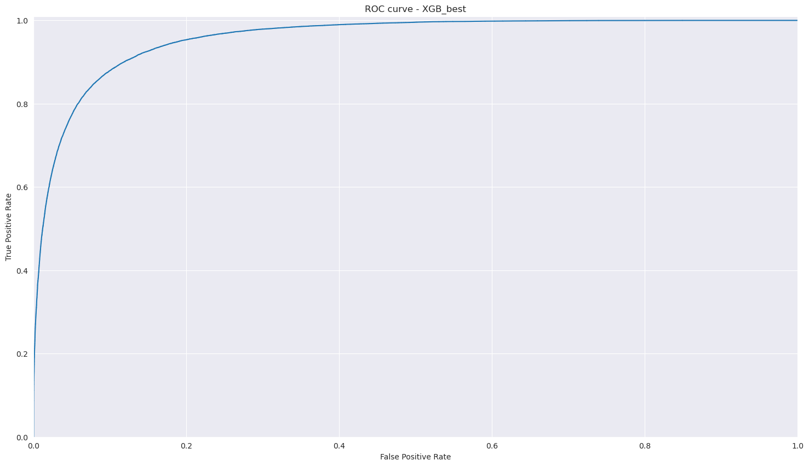
Comparing Results between XGB n Random Forest Regressor after training on whole dataset
plt.figure(figsize=(20, 8))
keys = ["XGB_best","Random Forest Best"]
for key in keys:
plt.step(fpr[key], tpr[key], where="post", label=key)
plt.xlabel("False Positive Rate")
plt.ylabel("True Positive Rate")
plt.xlim([0, 1])
plt.ylim([0, 1.01])
plt.title("ROC curve")
plt.legend()
plt.savefig("Best_Model_Comparision_ROC_Curve_plot.png",bbox_inches = 'tight', dpi = 300)
plt.show()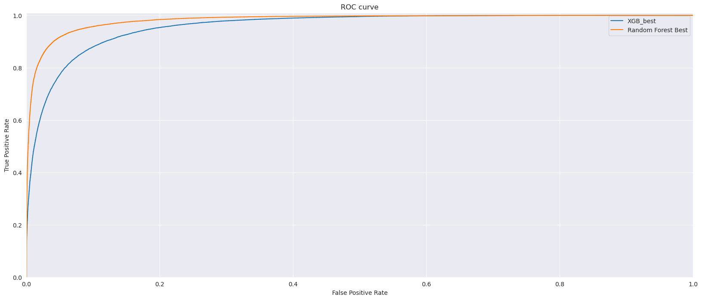
plt.figure(figsize=(20, 8))
keys = ["XGB_best","Random Forest Best"]
for key in keys:
plt.step(recall[key], precision[key], where="post", label=key)
plt.xlabel("Recall")
plt.ylabel("Precision")
plt.xlim([0, 1])
plt.ylim([0, 1.01])
plt.title("PR curve")
plt.legend()
plt.savefig("Best_Model_Comparision_PR_Curve_plot.png",bbox_inches = 'tight', dpi = 300)
plt.show()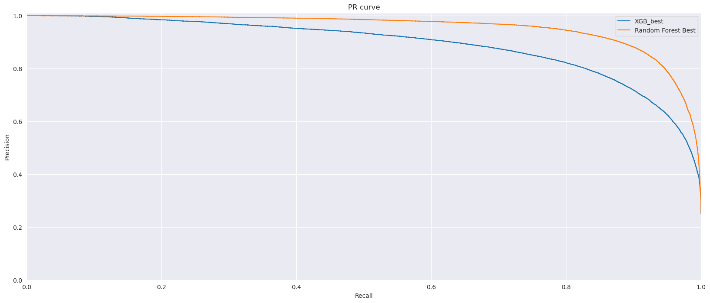
fig, axs = plt.subplots(1, 2, figsize=(18, 12))
best_models = {"XGB_best": best_xgb, "Random Forest Best": best_rfc}
axs = axs.ravel()
for i, (name, model) in enumerate(best_models.items()):
ax = axs[i]
y_pred = model.predict(X_val)
if name == "XGB_best":
confmat = confusion_matrix(y_true=y_val_encoded, y_pred=y_pred)
else:
confmat = confusion_matrix(y_true=y_val, y_pred=y_pred)
index = ["Actual Severity 1", "Actual Severity 2", "Actual Severity 3", "Actual Severity 4"]
columns = ["Predicted Severity 1", "Predicted Severity 2", "Predicted Severity 3", "Predicted Severity 4"]
conf_matrix = pd.DataFrame(data=confmat, columns=columns, index=index)
sns.heatmap(conf_matrix, annot=True, fmt="d", cmap="YlGnBu", ax=ax)
ax.set_title(f"Confusion Matrix - {name}")
# Hide the remaining subplots
for j in range(len(models), len(axs)):
axs[j].axis('off')
plt.tight_layout()
plt.savefig("Best Models Conf_Matrix_Plot.png",bbox_inches = 'tight', dpi = 300)
plt.show()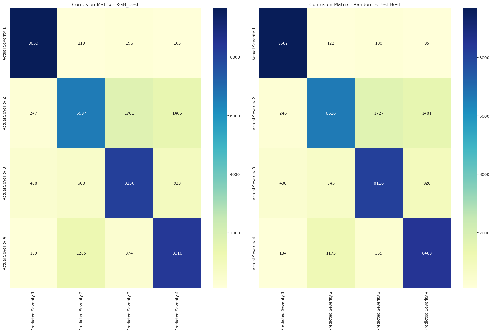
Conclusion of Model Training
Random Forest classifier performs the best on US-Accidents Severity Level Predictions
Overall every model performs well on Severity Levels 1,3,4 on Validation sets, however the accuracy and recall decreases on Severity Level 2
- The reasons for this can mainly be while balancing the data the sample that we chose for 2 Severity is not a good representative
- This is where one can retrain the models by choosing various random samples, or try including more data of Level 2 Severity and then retrain the models
Further every model can be trained using cuml GPU implementations on whole dataset, and then do more dense comparisions between models to select the best one
Thank you for reading the work 😊